第2章 华为 IPMS 流程的演进
2024 年 9 月，华为非凡大师 Mate XT 火爆亮相，一经发布便成为消费者关注的焦点，开售前更是吸引了超过 400 万人在线预约。在智能手机市场竞争愈发白热化的当下，这样的人气更是难能可贵。2024 年 9 月 20 日 10 时 8 分正式开售，不到 10 秒钟，第一波次便告售罄，华为官网甚至因访问量瞬间激增而一度瘫痪。华为非凡大师 Mate XT 的售价介于 19999 元至 23999 元之间，这一高端定价策略也并未阻挡消费者的购买热情。能够让非凡大师实现“首销即热销、上市即上量、新品即爆品”的背后推手，正是华为 IPMS 流程。
华为 IPMS 是华为基于 To C 消费品的特性，融合历年终端产品（如手机等面向终端消费者的产品）操盘经验开发出来的集成产品营销服流程。IPMS 既是业务流，又是业务流程，同时也是团队运作机制，经历了沿革进化的过程，如图2-1所示，源自 IPD 流程的营销计划流程（MPP）（至2012年），之后学习业界标杆升级至 GTM 流程（2013—2015年），再至迄今为止持续发挥作用的 IPMS 流程（2016年至今）。
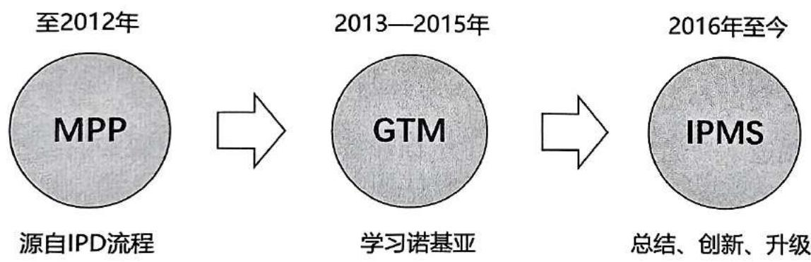
图2-1 华为IPMS沿革
2.1 源自华为 IPD 体系关键支撑流程 MPP
2.1.1 师承 IBM 的华为 IPD 体系
华为成立于 1987 年，是从代理小型交换机起家的。当时中国百业待兴，小型交换机市场十分火爆，全国的代理商也多，竞争十分激烈。在这种情况下，产品供不应求，代理商就会面临诸多问题：提前打款给厂家订货，工厂却仍然经常发不出货；产品出现质量问题，无法获得及时修理；另外，厂家也没有备件提供给代理商备用。华为为了服务客户，真是吃了不少苦头。为了满足客户的需要，最后只好将新的交换机拆成零件用于维修。1989 年，由于香港鸿年公司（供货商）被收购，华为也因此失去了代理权。断货之后，华为虽然有客户，但陷入了无货可卖的境地。正是有了这种痛苦的经历，华为开始自主研发、自己生产产品，努力将主动权掌握在自己手里。
得益于20世纪90年代初的通信卖方市场及社会需求的巨大潜力，华为公司获得了不小的发展机会。1991年，华为公司的小型模拟空分式用户交换机HJD48获得成功，当年就创造了一亿元的产值。有了市场和资金，华为又把赚来的钱投入数字程控交换机C&C08的研发中。随着产品的成功，华为终于在通信市场占有了一席之地。
当时与员工研发产品、干劲十足形成鲜明对比的是公司对产品研发的粗放管理。在现任华为监事会主席郭平所著的《常变与长青》一书中有这样对产品研发的描述：
“我做第一个产品的时候，当时市场上比较先进的是256门交换机，公司立项想做的就是256门交换机。后来我一算，最大容量可以做到512门，于是也没有正式的立项手续，我们就自作主张做了512门的交换机，竟然还成功了。当时产品开发几乎完全依赖几个技术水平高的牛人，他们奔走在几个产品开发项目之间，来回打‘游击战’，整体研发效率低，产品的质量也不高。研发人员在升级的时候，发现这个版本不行，就干脆重做一个，也不继承前面的版本。工程师为了解决问题，不得不现场调试版本，眼看天要亮了，才不得不急急忙忙赶出一个版本临时救急。可以说那段时间产品迭代和版本管理都处于失控的状态。当时项目团队也各自为战，都自行采购材料、自主选择加工厂，整个公司没有统一的研发平台和研发管理。”
1995 年，华为自主研发成功万门 C&C08 数字程控交换机并商用后，公司实现快速增长，全年实现销售额 14 亿元，1996 年为 26 亿元，1997 年为 41 亿元，1998 年则达到 89 亿元。此时，管理上存在的问题也日益显现，制约着企业的发展。收入快速增长，而毛利率却逐年下降；产品开发周期是业界标杆的两倍以上；客户需求在产品开发过程中一变再变；新产品收入占比仅为 10%，远低于西方大多数通信公司 25%~36% 的比例……类似的问题还有很多。
任正非此时认识到，如果企业要健康成长，管理变革迫在眉睫。1997年底，任正非带领团队访问了美国休斯公司、IBM、贝尔实验室与惠普公司。在访问美国期间，IBM涅槃重生的故事让任正非着迷。IBM是拥有26万名员工的大公司，虽然规模庞大，但公司管理制度规范，大企业像小公司一样灵活、响应速度快。任正非对IBM因变革而产生的种种变化有了新的认识，尤其对IPD（集成产品开发）的管理模型十分欣赏。他认真听取了IBM公司运作项目的全流程介绍，包括从预研到寿命终结的投资评审、综合管理、结构性项目开发、决策模型、筛选管道、异步开发、部门交叉职能分组、经理角色、资源流程管理、评分模型等全面内容。后来任正非发现，不仅仅是IBM，AT&T、朗讯也是这么管理的，这些管理思想都源自美国哈佛大学等著名大学的一些管理著述。
任正非深刻意识到：“我们只有认真向这些大公司学习，才会使自己少走弯路，少交学费。IBM 是付出数十亿美元直接代价总结出来的，他们经历的痛苦是人类的宝贵财富。”
1998 年，经任正非发起，华为研发内部开展了“向美国人学习”“向 IBM 学习”的活动，并组织了“创业与创新”的大讨论。在 IBM 顾问的指导下，华为展开了 IPD 咨询项目。
人们都习惯于舒适和熟悉的环境，恐惧变化，这是人之天性。而变革势必会带来不安及戒备心理，潜意识里是抵触的。因此，变革往往又被称为“一把手工程”，意思是如果一把手不支持，变革活动很难开展下去。在推行 IPD 变革项目时，华为也遇到了很大的阻力。此时，任正非指示：谁阻挠了IPD的发展，就把谁裁掉。
在任正非“削足适履”的口号下，穿上了他向 IBM 定制的 IPD 这双“美国鞋”。在 IBM 设计的五年课程中，华为逐步适应这双“美国鞋”，从学习到结合华为的实际来设计相应流程，再到小规模试行，最后大面积推行，成功实现了一个从无到有的过程。最终，IPD 的理念融入了华为人的血液，成为华为人基因的一部分。经实践证明，IPD 流程给华为公司带来了如下好处：产品投入市场时间缩短 40%~60%，产品开发浪费减少 50%~80%，产品开发生产率提高 25%~30%，新产品收益（占全部收益的百分比）增加 100%。
华为 IPD 变革是从流程重整和产品重整两个方面来变革整个产品开发业务和开发模式，主要包括若干关键要素：结构化流程、跨部门团队、项目及管道管理、业务分层、异步开发与共用基础模块（CBB ）、需求管理、投资组合管理、衡量指标。IPD 结构化流程框架包括三个最重要的流程：需求管理流程、市场管理流程（MM ）和 IPD 流程，如图 2-2 所示。三大流程充分体现了市场驱动、客户需求导向，把产品开发作为投资来管理的思想。市场管理流程负责做正确的事，它通过理解市场、市场细分、组合分析、制订商业计划以及融合与优化商业计划，输出产品系列的 SP/BP（战略规划 / 业务计划）、产品开发路标并制定 Charter（任务书），为 IPD 流程提供正确的输入；IPD 流程通过分阶段的、跨功能领域合作的方式，把大量的研发人员以及市场、供应、制造、采购服务、人力资源、财经人员有序组织起来，完成产品开发以及相关功能领域准备工作，成功上市并持续监控产品上市后的表现直至退出市场；需求管理流程通过收集、分析、分发、实现、验证，对从机会到商业变现全过程中的需求进行有效管理，不同客户需求分别进入规划、路标、Charter，紧急需求通过规范的计划变更请求（PCR，Plan Change Request）进入正在开发的产品或解决方案中，保证了客户的中长期需求、紧急需求都及时得到满足。
从图 2-2 可以发现, Charter 处于整个 IPD 结构化流程体系框架的中心位置, 起着承上启下的重要作用。一个 Charter 的质量高低甚至可以决定后续产品开发的成功与否。
Charter 是任务书（或商业计划书），是产品规划过程的最终交付物，也是产品开发的投资评审决策依据。Charter 的价值在于保证研发做正确的事：一是判断产品值不值得投入；二是如果值得投入，应该怎样做才有竞争力。Charter 的核心内容包括：Why（回答产品为什么要立项）；What（市场需要的产品包需求是什么）；When（何时是最佳市场时间窗口）；Who（完成这个产品开发需要的团队和角色）；How（产品的开发策略、商业计划及盈利策略、上市营销策略等）；How much（开发产品需要投入的成本和费用）。
图 2-2 华为集成产品开发 IPD 结构化流程体系框架
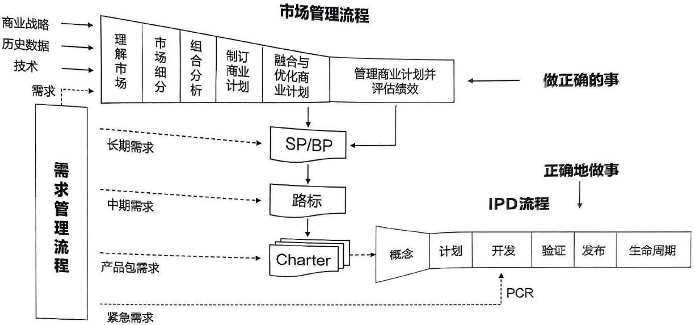
由上可知, Charter 的质量是整个产品质量的基础。为了确保 Charter 的开发质量, $\mathrm{CDP}$ 为 Charter 的开发提供了流程保障。CDP 流程分五个阶段: $\mathrm{CDT}$ 立项准备 $\rightarrow$ 市场分析 $\rightarrow$ 产品定义 $\rightarrow$ 执行策略 $\rightarrow$ Charter 移交。高质量的 Charter 移交后, 产品开发流程 IPD 也就随之启动了。
产品开发流程 IPD
整个产品开发的过程分为六个阶段，分别为概念、计划、开发、验证、发布及生命周期管理。每个阶段都有明确的目标，并在流程中定义了清晰的决策评审点（DCP ）和技术评审点（TR ）。每个决策评审点都有一致的衡量标准，只有完成规定的工作并达到质量要求，才能通过并进入下一阶段工作（图2-3）。
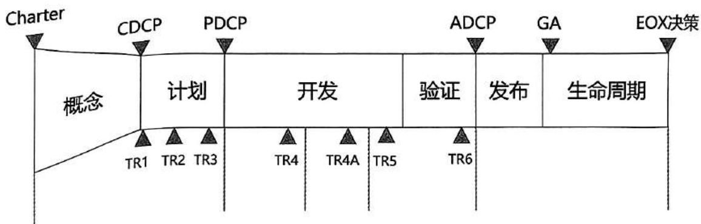
图2-3 集成产品开发流程IPD
产品开发流程解决的是“开发、生产出好产品”的问题，产品操盘流程解决的是“卖好、卖爆、实现商业成功”的问题。由于产品操盘流程与产品开发流程深度互锁，因此为了便于理解，下面简单介绍产品开发过程的几个阶段以及技术评审点和业务决策评审点的内容。
1. 产品开发过程阶段的主要内容
(1) 概念阶段
分析和理解任务书（Charter），确定产品的总体包需求和备选概念，进行系统需求的分析，对产品机会的总体吸引力以及各功能领域的策略做出快速评估，形成初步项目计划（1~2级）。主要输出文件为初步的商业计划、端到端概要项目计划、产品包需求和产品概念、概念决策评审材料。
简单理解: 这个阶段是构思阶段, 对产品进行定义。在产品诞生之前, 会思考产品的定义, 包括该产品的卖点 (锁定目标人群, 如商务人士、女性、高端或性价比, 还是以提升市场占有率为目的)、配置 (芯片、屏幕、电池等)、工业设计 $(\mathrm{ID})$ (尺寸、外观、CMF等)、物料清单 ( $\mathrm{BOM}$ ) (选型及成本)、售价 (价格档位)。在这个阶段, 至少会有数十个方案进行评审, 最终仅会留下 1~2 个方案。根据不同机型, 这一阶段至少要提前 3 个月, 一般会提前 1 年至 1 年半的时间考虑,华为三折叠屏非凡大师更是在五年前就进入了概念阶段。为什么会需要这么长时间呢？因为要海量选型，还要考虑工业结构设计、ID设计以及BOM，牵一发而动全身。（思考得清不清楚）
(2) 计划阶段
清晰地定义产品方案及其竞争优势，进行系统架构设计，制订详细的项目计划（3~4级）和资源计划，确认最终的商业计划和合同式协议。如果采用项目级敏捷模式，还需要进行迭代准备。主要输出文件为最终商业计划、项目合同、架构与系统设计文档、端到端的详细项目计划、敏捷迭代准备材料、生命周期计划、早期客户清单、计划决策评审材料。
简单理解: 这个阶段手机有了模型——“手板”。需要开模制成模型, 可直观感受在概念阶段定义后的产品是否能完美地承接和呈现。(手板好不好看)
(3) 开发阶段
产品开发阶段的主要任务是设计、开发、集成、测试符合设计规格的产品包，并构建产品原型，完成市场、制造、服务等领域的准备工作。在此阶段，可以使用不同的开发方法管理产品开发，如瀑布模型、敏捷产品开发、规模化敏捷等。开发阶段的主要输出文件为可供 Beta 验证的产品包、详细的产品发布计划、确定的 Beta 测试地点和客户名单、产品数据包。
简单理解：这个阶段将有工程样机输出，各种芯片、元器件、电池组装后，验证手机是否能够成功制作出来。（样机做得出来）
(4) 验证阶段
进行批量生产验证和客户验证测试，确认产品功能满足要求，确认各功能领域的上市准备已经就绪，发布最终的产品规格及相关文档，为产品最终上市做好准备工作。主要输出文件为最终上市的产品、制造能力及产量计划、产品发布计划、生命周期计划、一般可获得性决策评审材料。
简单理解: 在验证阶段后期进行手机的小批量生产, 关注产品生产的良率。(生产得出)
(5) 发布阶段
发布产品，制造足够数量的、高质量的产品，以便在一般可获得性决策评审（GA）后能及时销售发货。主要输出为量产准备就绪的产品和上市的产品。
简单理解：这个阶段将大批量生产产品准备上市，满足市场需求。（供应得上）
(6) 生命周期阶段
生产、交付节奏要与销售节奏匹配，到后期考虑退市及库存的清理。（销售得好、退出得稳）
2. 技术评审
为了保证产品开发的质量，在产品开发流程的每一个阶段结束之前，都需要对本阶段交付件的质量进行技术评审（TR）。技术评审用于检查IPD实施到一定阶段后产品的技术成熟度，评估存在的技术风险，发现遗留的技术问题，并从技术的角度给出决策建议。技术评审点通常是强制要求的，旨在尽量避免质量问题和技术风险流入下一阶段，从而减少返工带来的资源浪费和进度损失，降低研发成本，加快产品上市速度。
关键质量控制点除了TR点，还有各领域评审点，如 $\mathrm{MR}$ 、 $\mathrm{MFR}$ 、 $\mathrm{SR}$ 、 $\mathrm{POR}$ 等。不同的开发项目，相关领域的工作或有所不同，可以视情况进行相应的适配和裁减。
3. 业务决策评审
IPD 流程在产品上市前设立了概念决策评审点（CDCP ）、计划决策评审点（PDCP ）、可获得性决策评审点（ADCP ）三个投资决策评审点。这些评审点分别决定项目能否进入下一个阶段，并批准相应阶段的投资，从而形成了分阶段投资的模型，以控制研发投资风险、减少研发投资浪费。这些决策点并非技术评审，而是商业评审，它们关注正在开发过程中的产品在未来市场中的地位和竞争力、是否值得投资、有无清晰的开发计划、上市前产品及各功能领域是否准备就绪等（见表2-1）。
如果决策未通过，则不浪费资源，项目将终止。开发项目获得立项批准并进入开发流程后，在CDCP和PDCP阶段，经过项目风险评估，可以例行终止或调整投资方向。在PDCP点，待开发的最终产品及开发计划应已评估清楚。一旦获得批准，一般情况下都会投入所需的研发资源，按计划完成开发任务，将产品推向市场。
表 2-1 产品开发流程各阶段评审点及内容
| 研发阶段 | 技术评审点 | 决策评审点 | 评审内容 |
|---|---|---|---|
| 概念阶段 | TR1-产品包需求和概念评审 | 概念决策评审点(CDCP) | 评审产品需求和技术方案,决定是否继续投入资源研发 |
| 计划阶段 | TR2-需求分解和规格评审TR3-总体方案评审 | 计划决策评审点(PDCP) | 从关注产品需求到产品规格的完整性,确认产品计划是否可行,并能否推向市场,产生收益 |
| 开发阶段 | TR4-模块/系统评审TR5-样机评审 | / | 主要针对模块或系统的功能开发进行评审和测试,降低技术风险 |
| 验证阶段 | TR6-小批量评审 | 可获得性决策评审点(ADCP) | 确认小批量生产是否可行,功能是否完备,以及产品是否已准备好发布 |
| 发布阶段 | / | / | / |
| 生命周期阶段 | / | 生命周期终止决策评审(EOX) | 决定产品是否退市 |
IPD 结构化流程和 IPD 流程
“IPD 结构化流程”与“IPD 流程”在上文中不时出现，可能会让读者感到困惑。为了便于理解，下面简单阐述 IPD 结构化流程和 IPD 流程的区别。
什么是结构化流程？所谓结构化，是指相互关联的工作要有一个框架结构，并要有一定的组织原则来支撑。以 IPD 结构化流程为例，它是指管理研发工作的整个流程体系，包括前面提到的市场管理流程、需求管理流程、IPD 流程，以及相关的使能流程和支撑流程等。IPD 结构化流程框架包括三个最重要的流程：市场管理流程、IPD 流程和需求管理流程，如图 2-2 所示。IPD 流程是 IPD 结构化流程架构中的一个组成部分。
2.1.2 MPP 流程
2.1.2.1 MPP 流程有助于产品上市推广和销售成功
徐直军在 2014 年市场大会 “变革与管理改进” 专题上说: “IPD 流程的建立, 使华为在产品领域不再依赖 ‘个人英雄’, 而是基于流程就能做出一个基本能满足客户要求、质量有保障的产品。” IPD 项目推行后, 经过 5 年的实践, 研发项目平均周期持续缩短 50%, 产品故障率减少 95%, 客户满意度持续上升。随着 IPD 体系的深入推进, 华为发现在产品交
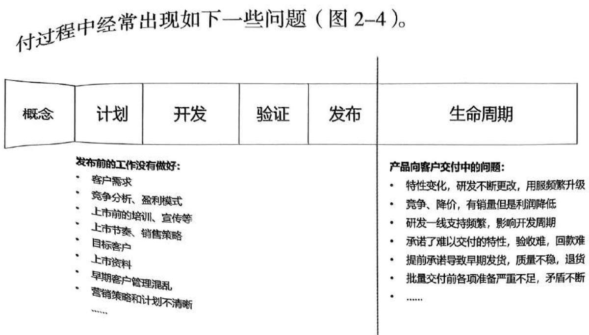
图2-4 产品交付过程中的常见问题
在产品发布前, 有些工作没有准备到位, 如客户需求不清晰、竞争分析不全面、销售策略不到位等。这些问题导致在向客户交付产品过程中产生诸多问题: (1) 用户需求发生变化, 研发不断更改方案; (2) 为了竞争不断降价, 销量增加但利润降低; (3) 承诺了难以交付的特性, 导致验收及回款困难等。在遇到诸多问题后, 华为逐渐意识到市场管理和客户需求管理的重要性。因此, MPP 流程作为 IPD 体系的一部分, 作为关键支撑流程被逐步引入和实施, 并于 2005 年 10 月正式发布 (MPP 融合了原来 IPD 中的 17 个市场领域的模板和 Launch 流程, 清晰地定义了流程的角色和职责, 并将各项市场活动紧密地衔接在一起, 为市场代表及其团队的市场活动提供了一个基于流程的操作指南, 对业务计划的执行起到了积极有效的推动作用), 如图 2-5 所示。
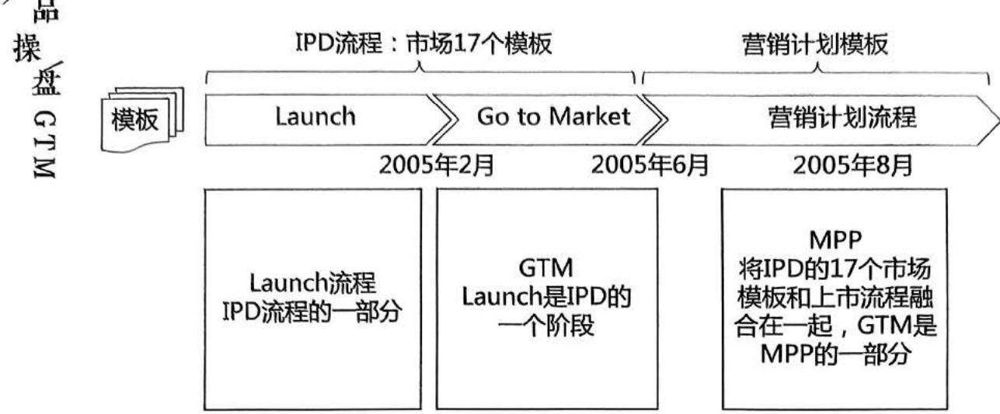
图2-5 MPP发展历程
推行 MPP 的目的是快速响应客户需求，提升产品竞争力；控制产品上市节奏，缩短开发周期；保持利润持续增长，提升客户满意度和公司品牌形象。
MPP 营销计划流程旨在为产品和解决方案上市前的营销活动提供清晰、可控、基于流程的方法，确保产品在市场上的成功推广和销售；明确市场领域在 IPD 中做什么、怎么做以及谁来做。MPP 中的很多要素源于市场管理流程（MM），MPP 的核心交付件是《营销计划》，包含确保产品符合市场需求、保证产品盈利和制订落实新产品上市计划三个部分。营销计划的内容在整个 IPD 过程中都需要进行维护和更新。总之，MPP 流程是面向产品上市的流程，其底层逻辑基于经典的 4P 营销理论（Product, Price, Place, Promotion），MPP 流程的实施有助于确保产品在市场上的成功推广和销售，通过明确的营销策略和计划，提高产品的市场竞争力，如图 2-6 所示。
第2章 解密：产品操盘流程PMS的前世今生
图 2-6 MPP 流程在华为集成产品开发 IPD 管理体系中所在位置示意图
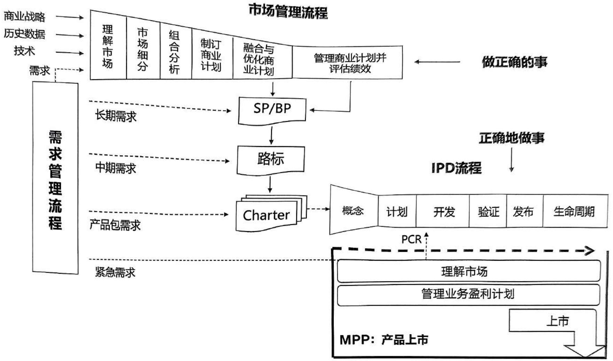
MPP 流程发布前后的对比详见表 2-2。
表 2-2 MPP 流程发布前后对比表
| 区分 | MPP 发布前 | MMP 发布后 |
|---|---|---|
| 流程 | Launch 流程, ESP流程 | 由 MPP 替代 Launch 流程、ESP 流程 |
| 模板 | 17 个市场领域的模板缺乏衔接 | 取消原来的 17 个市场领域的模板,MPP 新模板明确了责任人及输入输出关系 |
| 角色 | 市场代表外围组各个成员职责定义不清晰 | 定义了核心组和扩展组及其职责 |
| 与 IPD | 作为核心组成员参与 IPD | 由市场代表团队和 MPP 来支撑 IPD |
| 与 MM | 市场代表模板与 MM 衔接不紧密 | 市场模板直接从 MM 流程中继承 |
| 与 OR | 需求直达研发,由 SE控制 | 需求经市场代表到研发,由 RME控制 |
| 与预测 | 只有短期预测 | 短、中、长期预测 |
| 业务指导 | 竞争分析、需求分析等缺乏指导 | 增强了竞争分析、需求分析等指导性内容 |
备注: 1. SE 是系统工程师, 在 IPD 体系中扮演着关键角色, 负责将市场需求转化为产品包需求，并确保开发过程符合产品需求和规格。SE 需要具备跨领域知识和技能，以确保产品开发的成功。具体职责包括需求转化、产品设计和过程检视等。
- RME 是需求管理工程师，在华为的需求管理体系中，负责需求的收集、分析、分配和实现。RME 通过与市场代表合作，确保需求能够有效地传递到研发部门，并由研发团队进行实现。RME 在需求管理流程中起到桥梁的作用，确保需求从市场到研发的顺畅传递。
MPP 流程中的角色
-
市场代表核心组: PDT 市场代表、市场分析工程师、需求管理工程师、营销支持工程师、业务规划工程师、整合营销宣传工程师。
-
市场代表扩展组：定价工程师、预测工程师、研发市场技术经理、网络设计工程师、行销工程师、服务营销工程师。
以 PDT 市场代表、整合营销宣传工程师举例看角色职责。
(1) PDT 市场代表的角色职责
-
管理核心组、扩展组成员，负责营销计划的整体制订与落实；
-
驱动所有功能部门活动的整合；
-
驱动营销计划和进度的制订以及签注；
-
制订与战略相协调的产品包计划，并驱动产品包推向市场；
-
制订与策略相协调的项目计划；
-
确保营销和销售活动的准备度；
-
评估绩效，并针对策略和计划提出调整建议；
-
制定产品包 / 解决方案策略；
-
制订资源和技能计划。
(2) 整合营销宣传工程师 (IMC ) 的角色职责
-
将营销策略和需求转变为有效的 IMC 策略、计划与方案；
-
支持营销对新产品包 / 解决方案的定位，并运用 IMC 目标策略和活动介绍新产品包 / 解决方案；
-
选择正确的宣传策略（广告、促销、互动营销等），管理 / 指导宣传策略的执行；
-
有效地运用定性和定量研究来制订、度量 IMC 计划和方案；
-
制订有创造性的、有创意的、可度量的 IMC 计划和交付件工具，交付 “Brand Promise of Value”（华为对其产品和服务所承诺的价值）；
-
管理大型的复杂的 IMC 项目，确定目的、范围、益处、成本、交付件和进度等；
-
协调 IMC 策略、计划和方案，确保跨业务部门和地区部对它们的理解以及正确实施；
-
应用品牌概念和方法论；
-
管理产品包命名；
-
管理内部、外部发布信。
2.1.2.2 4P 营销理论在 MPP 流程中的应用
- 产品 (Product)
华为在产品开发阶段，会深入研究产品的功能、设计、质量以及品牌等方面，以确保产品在市场中具有竞争力。这包括了解消费者是谁，他们想要从产品/服务中获得什么，产品的特色以及它如何满足消费者需求。
- 价格 (Price)
定价策略是华为营销计划中的关键部分，它不仅决定了利润、需求和供给的关系，还决定了市场产品的定位，即是高端市场还是性价比市场等。华为会综合考虑产品成本、市场需求、竞争对手定价和目标利润等因素，制定合理的定价策略。
- 渠道 (Place)
渠道策略涉及产品从生产者到消费者的传递过程。华为选择合适的销售渠道，如零售店、电商平台或分销商，以有效覆盖目标市场并提升销售效率。这包括确定产品的销售渠道和分销策略，以及与渠道合作伙伴建立并维护良好的合作关系。
- 促销（Promotion）
促销策略旨在通过广告、公关、销售促进等手段，与目标消费者进行有效沟通，提升品牌知名度和产品销量。华为会制定推广和营销活动策略，包括广告、促销、公关活动、市场营销活动等，以提高产品曝光度和吸引消费者。
2.1.2.3 MPP 流程简介
1. MPP 核心交付件的三大核心
MPP 核心交付件的三大核心为理解市场、管理业务盈利计划、上市（图 2-7）。
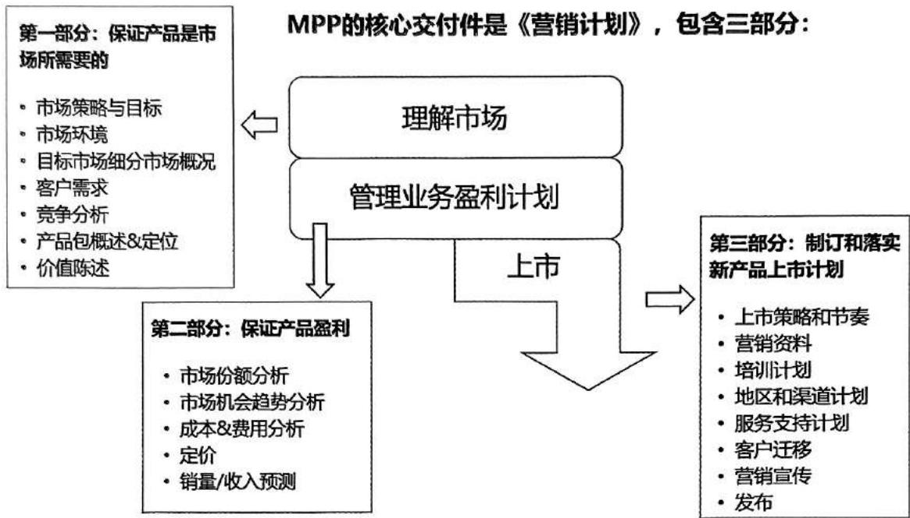
图2-7 营销计划三大核心
-
理解市场：确保产品是市场所需要的。为了保证产品是市场所需要的，要对市场进行充分的洞察，包括市场环境、细分市场、需求与竞争分析、产品包概述及定位等，以充分理解市场。
-
管理业务盈利计划：确保产品盈利。为了保证盈利，需要制定相对准确的定价策略，这要求对市场份额、市场机会趋势、成本及费用等进行深入分析，并对销售和收入进行相对准确的预测。
-
上市：制订并落实新产品上市计划。为产品上市做好充分准备，制订相应的上市策略（及节奏）、营销计划、培训计划、渠道计划、服务计划等。
2. 四个阶段和三个评审点
图 2-8 所示为 MPP 流程中四个阶段和三个评审点。
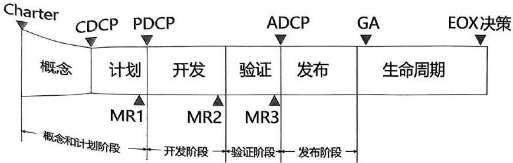
图2-8 MPP流程中四个阶段和三个评审点
(1) 四个阶段
• 概念和计划阶段: 市场营销团队在收到任务书(Charter)后, 再次对市场进行分析和洞察, 确认市场环境的变化。然后根据最新的市场洞察结果, 制订业务盈利计划和产品上市计划, 开发早期资料。随后进行 MR1 评审。评审通过后, 提交计划决策评审材料, 进行 PDCP 评审, 并执行 PDCP 决议。
-
开发阶段：市场营销团队开发营销计划、营销宣传材料、投标支撑材料和产品配置工具，并完成产品的初步定价。在早期少量发货之前，进行 MR2 评审，同时启动产品的早期宣传和培训赋能工作。
-
验证阶段：产品通过 MR2 评审后，意味着产品相关参数基本已确定，如特性、规格、成本等。此时，需要根据MR2的评审结论，更新营销材料，包括营销计划、投标材料、产品配置工具等，并根据产品最新成本和市场计划调整产品定价。在进行可获得性决策（ADCP）之前，需要进行MR3评审，确保营销工具基本正确可用。此时，市场营销和宣传工作也在同步进行。
-
发布阶段：当产品达到发布条件时，市场营销团队需形成完整的营销资料包，以支撑产品的上市销售。
(2) 三个评审点
-
MR1：重点关注细分市场的营销策略，包括总体策略、需求确认、竞争分析、盈利分析、上市策略和计划、营销资料和计划等，确认营销策略是否与目标细分市场相匹配。
-
MR2：重点关注上市计划的执行进展，包括目标细分市场衔接、培训进展、营销资料撰写进展、定价、产品配置工具、准入、品牌宣传进展等，确认营销活动是否按计划有序进行。
-
MR3：重点关注全套营销活动的完成情况，包括上市活动质量评估、目标市场培训、产品定价、产品配置工具开发、准入认证、品牌宣传等活动的完成情况，确认是否为产品上市做好了充分准备。
2.1.3 MPP 流程在华为消费者业务中的应用
众所周知，华为早期是一个非常典型的 To B 公司。在 2011 年成立消费者业务单元（BG）后，终端业务由运营商市场向公开市场转型，To C 业务才蒸蒸日上。MPP 流程是针对 To B 业务的，那么它可以支撑华为终端业务，例如手机的开发及上市吗？答案是肯定的。早在 2003 年 7 月，华为就成立了手机业务部，任正非决定同时进入个人手持式电话系统（PHS ）——小灵通手机和手机市场。在 3G 时代，华为本来只打算踏踏实实做 3G 系统，但担心没有配套的手机产品，华为的 3G 系统就卖不出去，于是便开始给运营商定制 3G 手机。从 2003 年至 2010 年，华为做手机基本上是为了给自家的主航道业务保驾护航。
2003 年开始，华为也同时启动了手机芯片的研发。华为手机的客户主要是全球各大运营商。图 2-9 是 2009 年与 2010 年的华为终端公司战略，从中可知华为终端的发展方向为构建以运营商为核心的行业生态圈，携手众多合作伙伴，提供端到端的解决方案和服务，实现我们与客户、合作伙伴的多赢；通过产品定制和增加产品的附加功能，华为为运营商提供质量好、价格优、服务好的产品，帮助运营商降低运营成本并快速发展用户; 致力于协助运营商满足用户对多样化终端的需求,为运营商带来潜在的业务增长。而且在手机业务方面, 华为已经自我定位: 作为手机定制专家, 华为已成为 $\mathrm{WCDMA}$ 手机 $\mathrm{ODM}$ 主流厂商。基于此战略目标, 华为终端业务的产品虽是 To C 的, 但实际的运作方式还是 To B 的, 即面向运营商的业务。
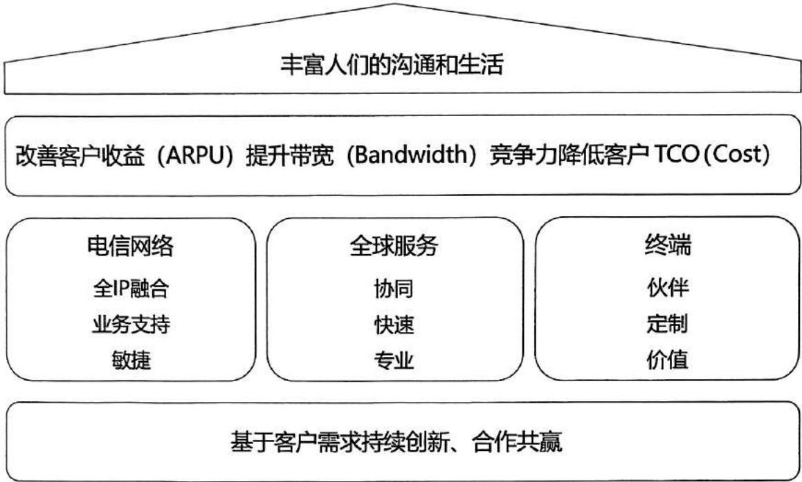
图2-9 2009—2010年华为终端公司战略
“伙伴、定制、价值”：聚焦运营商转售市场，满足运营商的需求，为客户定制更好的手机服务，围绕提升客户价值进行持续创新，华为也是基于此展开相应的工作。因此，华为终端业务实际还是 To B-To C 的业务，是直接面向运营商的业务，然后协助运营商针对消费者开展相应的营销活动，如促销活动策划、产品 KV 设计等。
由此可见，华为 IPD 体系的 MPP 流程在终端公司依然适用，可以指导手机等产品的上市及全生命周期管理。
- 市场理解与产品定位
通过 MPP 流程，华为首先确保手机产品是市场所需的。这包括对市场目标与环境、客户需求、竞争分析和产品定位的深入理解。这有助于华为确定手机产品的目标市场和客户群体，以及如何在竞争激烈的市场中突出其产品的独特价值。
- 业务盈利计划
MPP 流程还涉及管理业务盈利计划，包括定价策略、销量和收入预测。对于手机产品而言，这意味着华为需要预测市场需求、设定合理的价格点，并制定销售目标，以确保产品不仅能够满足市场的需求，而且能够实现盈利。
- 新产品上市计划
MPP 流程的核心交付件是《营销计划》，其中包括制订和落实新产品上市计划。对于手机产品，这涉及上市策略和节奏、营销资料的准备、培训、营销宣传和产品的正式发布。这些活动确保华为手机产品能够顺利上市，并迅速获得市场的关注和接受。
- 生命周期管理
MPP 流程与生命周期管理紧密相关，包括产品从开发阶段到退市的全生命周期管理。华为通过 MPP 流程确保手机产品在其生命周期的每个阶段都能实现最佳的市场表现，包括产品更新换代、部件老化问题的处理、功能更新以及最终的退市计划。
- 跨部门协作
MPP 流程强调跨部门团队的协作，确保从市场调研、产品开发到销售和售后服务的每个环节都能紧密配合，形成端到端的闭环管理。这对于手机产品来说尤为重要，因为它需要研发、营销、销售和服务等多个部门的协同工作，以确保产品的成功。
- 绩效监控与改进
通过 MPP 流程，华为对手机产品的市场、生产和服务绩效进行例行监控，并进行差距和机会分析，制定改进措施并推动相关部门落实。这有助于华为持续优化其手机产品的市场表现和客户满意度。
基于 MPP 流程运作的手机
华为 P1 于 2012 年 4 月 18 日发布上市，华为 Mate 1 于 2013 年 1 月上市。这是华为终端业务转型后两个比较有代表性的自有品牌手机，旨在冲击高端市场。愿望是美好的，但市场的反馈给华为上了深刻的一课。
由 To B 向 To C 转型实属不易。华为手机部门的很多人都是从其他业务部门抽调过来的，他们擅长电信产品开发，是某个领域的专家，但他们却不知道如何与消费者打交道，如何与渠道打交道，如何与媒体打交道，而这些也是 MPP 流程中原本缺失的地方。刚开始的时候，按照电信设备的玩法，简单粗暴地去跟其他竞品比拼产品性能，仿佛配置就等于市场。（华为在 IPD 推进的时候就发现，研发体系的大多数工程师有非常严重的技术情结，认为把技术做好才能体现自己的价值。为此，任正非多次强调产品研发要反对技术导向，要以客户需求为导向，要做工程商人。因此，面向消费者的思维转变也有一个过程，不是一蹴而就的。）
产品设计：为了体现华为的追求，华为把 P1 定位为全球最薄的手机。围绕“薄”这一理念，做了很多工作，选最薄的屏、全新设计电池和手机架构。然而，由于设计得太薄，因此天线性能无法达到要求。于是想了很多办法，但都不能有效提升天线性能，最后只得把手机尾部做厚以容纳天线。同时，P1 也主打“最快的双核手机”卖点，乐观地估计手机的配置、功能都是业界最好的，消费者肯定会接受这款产品。
产品广告：在中央电视台播放了“智者和白马”的广告，但消费者直呼看不懂：一匹白马和一位古希腊老者对视，然后各自开始相向奔跑，最后人与马碰撞在一起。在一阵电光石火之后，弹出广告文字——华为 P1 用智慧演绎至美。随后切换画面，出现华为打出的 Slogan ：华为不仅仅是世界 500 强。这是华为史上第一次做广告，也是华为的第一支手机广告。
产品定价: P1 的零售价为 2999 元。华为初次进入公开市场, 尚不清楚国内市场的游戏规则, 在渠道管控上也存在问题, 给渠道商预留的空间也不够, 较其他品牌相差甚远。定价从 2999 元被渠道、竞争对手还有舆论牵着鼻子走, 一下子降到了 2000 元以下。上市不到 2 个月, 某网上商城发文 “全球最薄安卓, 华为 Ascend P1 暴跌 400”, 售价 2599 元。在淘宝网上, 某些商家抛货价也已低于 2000 元。上市不到 3 个月时, 华为方面已经在考虑是否对先期以 2999 元购买 Ascend P1 的用户给予一定的优惠补偿。
产品规划: Ascend D 系列的第一款产品 Ascend D1 发布时, P1 还处于销售期。传统渠道商认为, 上架 D1 会影响 P1 的销售, 因此拒绝 D1 进入市场。D1 产品陷入了只闻其声不见其影的尴尬状态, 就连网上也鲜少见到。
P1 之后, 华为手机就开始了 Mate 1 的研发。在洞察到超大屏幕、超长续航手机的市场空白后, 李小龙带领产品团队启动了 6.1 英寸 (约 15.5 厘米) 大屏、长续航手机的开发。然而, Mate 1 却是所有旗舰中最失败的产品。原本计划做 80 多万台, 但由于操盘运作的备货节奏没有把握好, 剩下了 40 万台的物料。这些长期物料冲抵利润后, 项目总体是亏损的, 终端团队的信心也为此受到重创。但很快, 终端团队重整心情, 又开始投入 P2 和 Mate 2 的研发中。
华为意识到，如果想要做好手机业务，必须变革，要向业界标杆学习，引进先进的、符合消费品行业规律的管理方法。
2.2 向业界标杆学习，引入 GTM
2.2.1 向业界标杆学习引入 GTM 的背景
2010 年，苹果 iPhone 4 的上市带来了前所未有的抢购狂潮，消费者热情被充分调动起来；小米在线上的销售模式也产生轰动效应，“站在风口上，猪都能飞起来”。华为通过对行业发展趋势的研究，已清楚认识到手机将替代个人电脑成为信息中心。凭借手机的智能化、业务应用的云化、网络的宽带化，信息通信产业将从以网络为中心全面转变为以用户为中心，从面向终端设备的服务转变为以使用终端设备的人为中心的服务，使用户个性化得以充分展现。
市场的发展趋势已明晰，但随着华为终端业务不断拓展、规模持续上升，以及行业竞争的加剧，发展至2010年，华为终端已陷入瓶颈期，遭遇很大挑战。在原有的体系下，华为终端的业务受到了挤压和限制。例如，华为为运营商定制手机数千万台，市场占有率名列前茅，但由于没有打造华为品牌，华为在消费者心目中知名度不高；由于是为运营商定制，利润被压得极低；华为终端在公司内部话语权不足，内部协同力差；华为手机不能接入华为云，令人不可思议……
在此背景下，华为认识到要对终端业务重新定位，要按消费品的规律来办事，发展华为的消费者业务。2010年12月3日，任正非召集华为核心高管召开了一次重要座谈会。这次会议的核心内容是决定华为手机业务的战略转型，从为运营商定制手机转向打造自主品牌和面向消费者市场。此次会议无疑是华为终端业务的一次重大转折点，也是它面向消费者业务的一次历史性转折会议——堪称是华为终端的“遵义会议”。会议最终确定的主题为：做事要霸气，做人要谦卑，要遵循消费品的规律，敢于追求最大的增长和胜利。在此次会议中，集团对终端业务重新进行了定位，包括华为内部手机终端公司的定位，以及在手机行业的定位，明确了华为手机终端公司在华为内部具有“三分天下”的重要战略地位，同时在树立品牌方向上，给之前缩手缩脚、受华为集团各种ToB思维约束的手机终端公司松了绑——要勇于按消费品的规律办事，改变了华为过去不做品牌的策略。手机终端公司开始逐步投入大价钱进行品牌管理、研究消费者心理，同时进行产品规划，基于消费品行业的客观规律进行操作。正是基于这次会议，集团上下统一了思想，终端业务开始全面向公开市场转型，掀起了轰轰烈烈的ToC业务变革。座谈会后不久，华为将旗下所有面向消费者的业务，如手机、其他终端设备、互联网以及芯片业务整合在一起，组成了消费者BG。
2011 年 10 月，华为在海南三亚召开会议，提出 “面向高端、面向开放市场、面向消费者” 的三个核心战略，决定从
To B 业务模式向 To C 业务模式转型（图 2-10）。2011 年 12 月 15 日，华为 EMT 办公室（最高业务决策机构）通过了《关于华为终端发展战略的决议》，经任正非正式签发后，向华为集团内部各主要机构印发。决议对华为终端针对全球主要市场的未来发展战略、组织与人才、激励机制、解决方案与产品、销售模式、渠道与品牌等做了原则性阐述，明确了在三亚终端务虚会议上提出的“华为终端产业竞争力的起点和终点，都是源自最终消费者”的发展战略总纲。华为消费者业务在战略上明确了两点：（1）华为发展终端要追求盈利，必须以活下去为基础，不能仅追求规模和全球排名；（2）华为手机发展过程中的路标要以最终消费者需求为导向，而不是以运营商需求为导向。
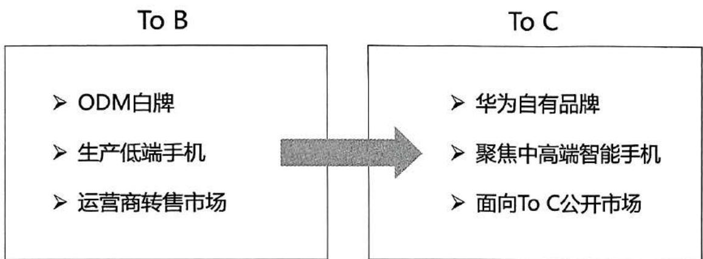
图2-10 华为由ToB向ToC转型
但是当时转型之难，不是一般人可以想象的。多年 To B 定制低端机的经历，让华为部分人的信心不足，从余总 2012 年 5 月 5 日所发的微博上可见一斑：“我和万飚原来一直坚持的意见是手机终端上继续叫华为名字，但在公司内品牌讨论会上，大伙几乎一边倒地都建议不要叫华为，大伙都说华为是B2B品牌，不利于面向最终消费者。看样子我们要被‘赶出’华为名字家门了。长期搞运营商定制集采，被陷入低价形象中，担心品牌杀不出来。博友们的意见？”
虽然难，但余总想清楚了，无论如何一定要转型。2012年9月22日，余承东发表微博，阐明华为调整的几大战略方向：
-
从 ODM 白牌运营商定制向 OEM 华为自有品牌转型；
-
从低端向中高端智能终端提升；
-
放弃销量很大但不赚钱的低端功能机；
-
启用华为海思处理器和 Balong 芯片，并搭载 Ascend D 上市；
-
开启华为电商之路；
-
启动用户体验 Emotion UI 设计;
-
确立硬件世界第一之目标。
总结来说, 为华为消费者 To C 的业务设定了 4 个目标 3 做 3 不做:
-
4 个目标：硬件第一；中高端；自主品牌；全球化；
-
3 做：芯片；软件；电商；
-
3 不做：不做低端机；不做功能机；不做定制。
至此，华为终端拉开了向 To C 业务转型的序幕，2012年也成为 To C 转型元年。
To B 模式和 To C 模式存在显著不同，即使发展到今天，同一家企业在 To B 领域和 To C 领域均取得成功的也是凤毛麟角。
华为终端业务在转型过程中同样遇到了不少挑战，详见表2-3。
表 2-3 To B 模式和 To C 模式的区别
| 区分 | To B | To C | |
|---|---|---|---|
| 产品研发 | 目标客户不同 | 运营商或企业客户 | 消费者 |
| 产品研发 | 目标客户理解 | 深入了解企业客户的业务流程、行业规范、组织架构等,使产品融入企业的复杂业务体系中,满足其特定的生产、管理、运营、盈利等需求 | 个体消费者的普遍需求、消费心理、生活场景等。特别是作为消费品,消费者对功能、外观、体验、服务、便捷等需求 |
| 产品研发 | 产品复杂度 | 复杂且深度集成 | 功能相对聚焦、简单易用 |
| 产品研发 | 研发周期 | 研发周期相对较长 | 研发周期相对较短,需要快速响应市场变化,抓住市场机会 |
| 产品研发 | ...... | ...... | ...... |
| 产品上市 | 市场推广渠道 | 主要通过专业的行业展会、研讨会、企业拜访、定向营销活动等渠道进行推广 | 依赖大众媒体、社交媒体、线上应用商店、线下门店等多种渠道进行广泛推广 |
| 产品上市 | 品牌建设 | 注重专业声誉、行业口碑和技术实力的展示 | 强调品牌形象、情感共鸣和消费体验的营造。通过塑造独特的品牌个性、传递情感价值,吸引消费者与之建立情感联系 |
| 产品上市 | 销售模式 | 直销、代销或项目制销售等方式 | 零售模式,通过线上渠道或线下渠道直接触达消费者 |
| 产品上市 | ...... | ...... | ...... |
| 产品方面 | 产品定价 | 产品价格通常较高,产品复杂且研发成本高,产量较少 | 产品定价需要考虑因素较多,需考虑消费者对价格的接受程度以及产品组合的定价体系 |
| 产品方面 | 产品生命周期 | 生命周期较长 | 生命周期较短 |
| 产品方面 | 产品更新换代 | 更新换代频率低 | 更新换代频率高 |
| 产品方面 | ...... | ...... | ...... |
在 To B 的业务模式下，集成产品开发（IPD）、市场到线索（MTL ）、线索到付款（LTC ）、问题到解决（ITR ）等流程已经被视为金科玉律，并且在市场上确实是屡战屡胜。当时华为公司不少员工也认为，做 To C 业务用这一套成熟的方法再加上适当的适配即可，无需涉及业务流程的重大变革。于是，主导这一块业务的余承东从原来的运营商 BG 调来一批业务流程专家开始做流程适配，同时也参考三星、摩托罗拉、HTC 等公司的产品运作方式进行流程变革。就这样适配了一年左右，结果发现不是很理想。
To B 业务流程的适配与改良应用到消费者 BG 行不通，那么应该何去何从？通过调研分析，华为发现急需补齐的短板是对消费品行业的认知，以及渠道、零售、品牌、市场营销（MKT）的能力，包括消费品操盘方法、分销客户管理、产品定价策略、线上线下门店运营管理等方法。怎么办？向标杆学习，就如同当初 IPD 变革一样（1998 年时，华为根据 PACE 理论自主研发变革，折腾了几个月没什么效果，因此决定请 IBM 顾问帮助华为变革）。当时华为终端高层做了一个果敢的决策，从外部大批量引进原本就从事 To C 业务的专家，包括诺基亚、苹果、三星、戴尔等公司的专家。如前诺基亚的 Colin Giles（赵科林），出任华为消费者 BG 的 EVP（执行副总裁）职务，负责零售、公开渠道、全球市场营销等方面的业务，之后又重点负责包括美国在内的海外市场。赵科林曾带领诺基亚在大中华区取得不俗的战绩，经验丰富，在华为向公开市场转型的早期作出了较大贡献。还有前诺基亚高管 CK，参与了华为渠道、零售、GTM 等业务管理及流程的开发项目。引入的“明白人”还包括前三星的高管、摩托罗拉的高管等，他们都为华为向公开市场转型作出了贡献。通过快速学习业界的战法，华为在品牌形象与产品销量方面实现了明显的转变与提升。这些有深厚 To C 业务背景的专家的实战经验与华为深厚的流程管理方法、工具相结合，从而形成了华为面向 To C 的新的流程管理体系。
2012 年，华为向诺基亚学习，引入 GTM 体系。
2.2.2 GTM 究竟是什么神秘组织？
华为公司的发展路径与诺基亚公司很相似，都是由 To B 发展成 To B + To C 模式的公司。在 20 世纪 90 年代，诺基亚作出了以移动通信为核心业务的决定，这一决策成就了诺基亚在全球移动通信领域的领导者地位。1992 年，诺基亚推出全球首款商用全球移动通信系统（GSM ）移动电话 101，成为手机直板设计的先行者。1994 年，诺基亚接通中国第一个 GSM 电话，此后一路高歌猛进，于是有了从 1996 年直至 2011 年连续 15 年全球手机销量第一的佳绩。
GTM 产生于诺基亚的背景
诺基亚作为电信设备制造商，全球的每个客户、每个运营商都有不同的需求以及面临不同的市场环境，几乎交付的每款产品和服务都是定制化的，以满足单一客户需求。因此，诺基亚有复杂的流程、内部细致的分工和庞大的组织与之对应，这也为其 GTM 体系的建立提供了良好基础。
“Go to market”（GTM）这个说法最早见于快消品行业，具体起源时间无从考证，但业内一般的看法是 GTM 实体组织产生于诺基亚，华为将之发扬光大。
诺基亚手机业务蓬勃发展，市场巨大的需求空间给了诺基亚腾飞的机会。一方面，这个行业属于增量市场，新购手机的消费者多，而且随着经济的发展，消费者对新技术的渴望日益增强，换机周期也越来越短，彼时手机已不再是耐用消费品，而是快速消费品了。为了贴近消费者以便更好地销售产品，诺基亚不仅模仿了快消品行业的 Go to market 模式，还从宝洁、可口可乐等公司招聘了大量营销管理人员，并引入咨询顾问进行赋能。这些行业专家的加入帮助诺基亚快速形成了新的能力和体系化的优势，提升了市场竞争力。快消品的经验（偏渠道、零售、市场端）与诺基亚自身深厚的耐用电子消费品的营销能力（偏产品端）快速融合，最终形成了诺基亚的 GTM 体系。
另外，GTM 的产生除了耐用消费品的营销模式和快消品的营销模式的整合外，其实还有一个背景，那就是产品已从单一的硬件转变成由衍生品配件、软件操作系统（OS ）、应用程序（APP ）等构成的复杂产品体系。在复杂产品的上市需求下，越来越需要有一个组织能够对内部各个部门，包括产品部门、技术平台（TP ）部门，也包括 OS 和 APP 以及服务配件等部门的面向消费者的统一开箱体验（TPO ）的上市过程进行拉通和对齐，做面向消费者的统一整合工作。因此，GTM 产生的根本原因是耐用消费品和快消品两个理念取长补短，再加之产品复杂化程度加深而应势产生的。
GTM 体系的主要内容包括进行市场动态和竞争分析，提出产品上市及销售过程中可能遇到的风险问题，并制定针对性的解决方案建议并推动落地。此外，GTM 还涉及管理产品的 S&OP（销售与运营计划）和一线销售计划，是一种统筹推动产品上市的组织、流程和团队或岗位。
诺基亚通过设立 GTM 策略、产品 GTM 和市场 GTM 三个方向的岗位，统筹推动产品上市。这些岗位负责品牌操盘、市场动态分析、产品生命周期管理等工作，确保产品能够触达目标人群并促成交易。GTM 策略、产品 GTM、市场 GTM 的定义及职责详见表 2-4。
表 2-4 GTM 策略、产品 GTM、市场 GTM 的定义及职责表
| 区分 | 定义 | 职责 |
|---|---|---|
| GTM 策略 | GTM 策略是产品组合战略的一部分,涉及产品的定位、定价、渠道选择、营销和销售策略等,旨在实现经营目标。它关注如何将一个成熟的产品通过合理的定位和定价策略推向市场,触达目标人群,并促成交易,实现经营效益的最大化 | 负责整体产品组合战略,包括定位、定价、渠道选择、营销和销售策略等 |
| 产品 GTM | 产品 GTM 是站在产品角度面向所有潜在市场的操盘手。其职责包括争取更多的销售和营销资源,帮助产品经理在公司内部争取支持,推动商业成功 | 关注产品的全生命周期管理,特别是具体产品的市场推广,包括市场分析、产品卖点挖掘、包装、促销规划、竞品分析等,帮助产品在市场上取得成功 |
| 市场 GTM | 市场 GTM 是站在市场角度面向所有产品组合的操盘手。其职责是在限定的市场范围内,通过合理的产品组合和本地化的 GTM 策略实现销售任务 | 关注在特定市场范围内通过合理的产品组合和本地化策略实现销售任务 |
GTM 的角色认知
诺基亚第一个正式的 GTM 始于 2005 年。全球设有 GTM 总部，下属还有各个区域市场的 GTM 团队，团队成员来自公司各部门，如研发、物流、广告、公关、市场活动、渠道、零售等。诺基亚大中华区的 GTM 组织隶属于产品市场部，设有 Go to Market Manager 一职。GTM 就如同一名作曲家，将对生活的热爱谱写成一首首脍炙人口的曲子（即产品规划、产品路标）；GTM 又像是一位填词家，给已谱写好的曲子填上最符合意境的、精美的辞藻，形成一首完美的歌曲；如果我们把每个产品或者服务的推广过程看作是演奏这首优美的歌曲，那么 GTM 就是这首歌曲的指挥家，在他的指挥下，每件乐器的演奏者各司其职，在各自适合的时间发出不同强度的音符，合聚起来演绎出曼妙的音乐。如图 2-11 所示。
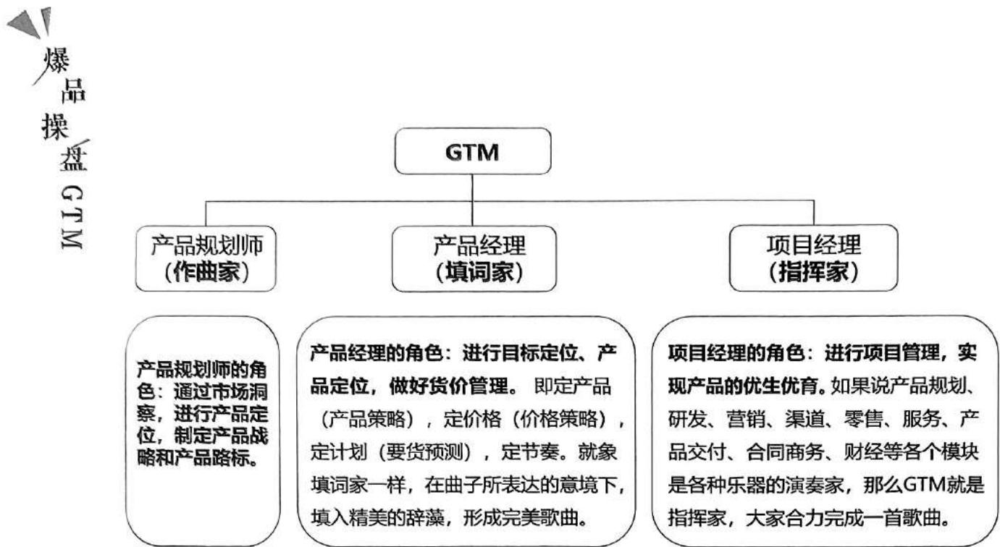
图2-11 GTM的角色认知
-
作曲家（产品规划师角色）：通过市场洞察，进行产品定位，制定产品战略和产品路标。
-
填词家（产品经理角色）：进行目标定位、产品定位，做好货价管理，即定产品（产品策略），定价格（价格策略），定计划（要货预测），定节奏等工作。
-
指挥家（项目经理角色）：进行项目管理，实现产品的优生优育。在 GTM 牵头带领下，产品规划、研发、营销、渠道、零售、服务、产品交付、合同商务、财经等各个业务领域协同共进，力出一孔，实现产品的商业成功。
诺基亚 GTM 所涉及的工作
-
诺基亚在全球范围内建立了强大的品牌影响力，并根据不同地区的特点进行本地化调整。例如，在中国市场，诺基亚推出了具有防尘键盘、防滑握把等特色的手机，以迎合当地消费者的需求。此外，诺基亚还针对印度农村市场推出了特别设计的手机，这些手机具备防尘、防滑等功能，以满足特定用户群体的需求。
-
诺基亚提供从低端到高端的广泛产品线，以适应不同市场的需求。在发展中国家或地区，诺基亚推出了价格低廉的手持设备，如在中国、印度和拉丁美洲市场上推出的经济型手机，这些设备不仅具有吸引力，而且具备盈利能力。而在欧洲和美国等竞争激烈的市场，诺基亚则推出了高端手机，配备高级功能和应用程序。
-
诺基亚在技术创新方面也表现出色。例如，为了满足不同运营商的需求，诺基亚开发了多种标准的手机，如在美国市场提供的 AMPS /TDMA 双模手机，在日本市场提供的半速 PDC 数字手机。此外，诺基亚还与微软合作，将 Windows Phone 作为其主要的智能手机平台，并通过整合服务资产推动创新。
-
诺基亚根据地理区域、人口统计学特征、年龄段和消费者群体进行市场细分，并采用不同的定价策略。例如，尖端科技产品采用高配高价、利润导向的营销策略，随后再降价的方式；而经济型产品则采用渗透式定价策略。这种灵活的定价策略使诺基亚能够更好地适应不同市场的经济条件和消费者购
买力。
- 诺基亚的 GTM 团队在产品上市过程中扮演着至关重要的角色。他们不仅负责市场推广，还需确保将销售反馈的信息及时融入产品的定位中，并整合全公司的营销资源。例如，在中国市场的 N9 推广中，GTM 团队利用知名演员主演的微电影进行病毒营销，创造了平均 2 分钟售出一台的纪录。
以诺基亚 Lumia800 和 N9 上市为例看 GTM 的产品操盘
“2011年11月28日夜晚，英国的泰晤士河边突然出现了一个高达120米的诺基亚Lumia 800手机：诺基亚将变幻的手机画面投射在伦敦旗舰建筑米尔班克大厦上，巨大的蝴蝶和令人难以置信的类似过山车一样的庞然大物以4D投影的形式从大楼里不断冒出来。戴着发光米奇帽子的加拿大著名DJ Deadmau5在楼底的荧光舞台上表演着他新创的电音单曲，激光变幻和快节奏的电子音乐交错在一起。此时泰晤士河两岸人头攒动，以至于伦敦警察不得不派人干预以维护秩序。”
这是摘自《第一财经周刊》张晶的文章《诺基亚 N9 背后操盘手》开篇的一段话，描述了诺基亚 Lumia 800 在英国上市时的壮观场景。阅读后感觉，诺基亚耍起酷来，比起时尚界有过之而无不及，即便此时诺基亚手机已面临危机。这可是 14 年前的一场大秀，即使放到现在，也是营销领域的大手笔。没错，这一幕的操盘手正是诺基亚 GTM 团队。产品开发团队的使命是创造出一款好产品，而 GTM 团队的使命则是精准击中消费者的心（需求），并让他们能够立即拥有（购买）。GTM 团队要在产品定位之初就融入销售反馈，然后整合全公司的营销资源，融入总体方案中。这个由 GTM 监管的步入市场的流程，是驱动诺基亚营销机器运转的引擎。从产品定义到零售执行完毕，GTM 需要监管和拉通制造、物流、市场、渠道、零售等各个环节。
刚才描述的是诺基亚手机在英国上市的情景，而在中国，诺基亚另一款 TOP 产品 N9 的上市同样精彩。N9 最早于 2008 年在诺基亚秘密立项，计划两年之后发布。芬兰总部为这款产品定下的口号是“秀出你自己”。但中国 GTM 团队认为这个口号不太适合中国市场，于是与芬兰总部多次沟通后，中国区域的口号被改为“不跟随”（Unfollow）。此外，N9 的本土应用程序，如微博等，与全球其他应用一起同步融入手机研发流程。这是 GTM 团队最重要的职能之一：让本土市场的需求在全球产品定义之初就融入产品雏形中，而不是等产品原型已经开发完毕再来本土化。除此之外，如何调用全球资源来配合本地的营销，也是他们要考虑的重要主题。
早在 2011 年 7 月, 诺基亚已经安排了 N9 的预热, 一组据说是 “世界上最快的广告” 就已经为 N9 的发布打了前站, 它从 YouTube 一路流行到优酷网。其中有一段讲述的是一位出租车司机的忙碌生活。9 秒内画面上依次掠过紧急刹车、换挡、啃汉堡、喝饮料、看街头足球、用 N9 浏览网页。在短短的一两秒钟里, N9 完成了 “进入浏览器” “点开页面” “展示图片”
这三个功能，比大多数智能手机都快——这也是N9要向用户表达的主题。
进入11月，GTM团队越发忙碌起来。11月11日北京工厂正式出货，13日首批N9到达诺基亚上海南京东路全球旗舰店，当晚8点15分开始销售。这个时候黑胶电影风格的“不跟随”微电影预告片已经在网上预热一个多星期了，2天后病毒营销正式开始，一天内在新浪微博转发超过30万次，并从不同网络渠道开始了全面推广。很快，首先供货的旗舰店和国美、苏宁等全国性渠道出现脱销。紧接着，另一位演员主演的“不跟随”微电影也开始了病毒营销以持续造势。与此同时，几乎所有主要的零售店已经挂上醒目的N9大幅宣传海报并开始供货。
由此可见，要调动这么多环节、这么多部门的共同配合与参与，才能把这场产品上市的仗打好。如果没有 GTM 团队的统筹安排及相应的流程控制，是很难达成上市即上量、首销即热销的结果的。
2.2.3 华为 GTM 流程
华为结合业界优秀实践，将原全球销售服务部下属的产品操盘组织“产品行销部”改为“GTM”部，承接相应的GTM职能，同时也增设了渠道管理部、零售管理部等部门。
这标志着公司由 “Sell in” 导向转变为 “Sell out” 导向。这不仅是简单的转变，更意味着公司从批发思维向零售思维的转变，由 To B 的客户思维向 To C 的以消费者为中心的转变。这种转变改变了公司的业务运作模式以及组织架构，按照消费品行业的规律进行了重新设计，如图 2-12 所示。
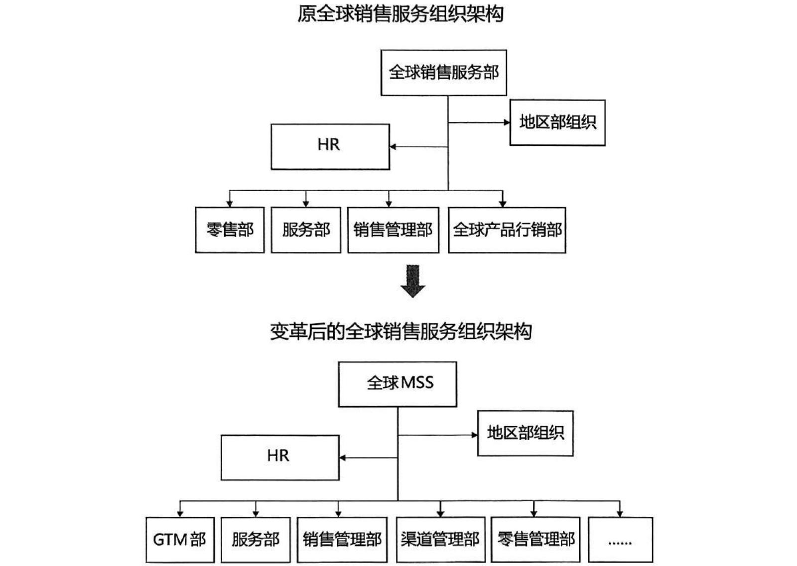
图2-12 ToB向ToC变革后的全球销售服务组织架构
从 Sell in 到 Sell through，再到 Sell out，这是产品从生产企业经过中间渠道最终到达消费者手中的全过程。只有端到端地实现产品全过程管理，才算做好了 To C 业务的基础工作。
-
Sell in（由企业到分销商）：即进货。指的是制造商或供应商将产品销售给分销商、批发商或零售商的过程。简而言之，就是产品从生产者流向销售渠道的过程。在这个阶段，产品还未到达最终消费者手中，而是进入了销售渠道。华为之前的手机销售模式主要以供货给运营商为主，向下分销的业务则由运营商负责。
-
Sell through（由分销商到零售商）：意为“流通”。指的是产品通过分销商、批发商等中间环节到达零售商的过程。
-
Sell out（由零售商到消费者）：即卖出、零售。指的是零售商将产品销售给消费者的过程。
华为在向 To C 转型时，一度只关注了 Sell in 和 Sell out 环节，对中间的流通环节重视不够，也因此遇到了不少问题。为了实现对渠道客户和零售客户的精细化管理，厂家对 Sell through 环节的掌控是必不可少的。
GTM 相关岗位的职责示意
1. GTM 策略岗位
- 制定整体策略规划
作为产品组合战略的一部分，负责制定产品的整体市场策略。包括确定产品的市场定位、目标客户群体，并依据市场情况和产品特点制定合理的定价策略。例如，对于一款新推出的中高端智能手机，需分析同价位段竞品的价格、功能、品牌影响力等因素，以确定该产品的价格区间，实现差异化竞争。
- 规划营销与促销活动
设计产品的营销推广策略，包括选择营销渠道、制订促销计划、规划市场推广活动等，以提升产品的知名度和市场占有率。比如，针对特定产品制定线上线下相结合的营销活动，线上通过社交媒体广告、电商平台推广等方式宣传，线下则举办新品发布会、体验活动等。
- 统筹各环节协同
协同产品研发、生产、销售、售后等各环节，确保 GTM 策略的顺利实施。例如，在产品研发阶段，需与研发团队沟通，确保产品功能和特性符合市场需求；产品上市后，要与销售团队紧密合作，及时收集市场反馈，以便调整和优化策略。
2. 产品 GTM 岗位
- 产品上市推动
产品实现后，负责推动产品上市。这包括与公司内部各部门（如研发、市场、销售、售后等）沟通协调，确保产品按时、高质量上市。例如，产品上市前，需与研发部门确认产品技术参数、质量标准等是否符合要求，与市场部门确定宣传推广方案，与销售部门沟通销售渠道和销售策略等。
- 争取销售与营销资源
协助产品经理在公司内争取更多销售和营销资源，以支持产品推广和销售。比如，争取更多市场推广预算、更好的销售渠道资源、更多销售人员支持等，从而提高产品销售业绩。
- 产品销售监控与分析
监控和分析产品销售情况，及时了解市场表现和销售趋势。根据分析结果，提出产品改进建议和营销策略调整方案，以提升产品市场竞争力和销售业绩。例如，通过分析产品销售数据，发现某地区销售情况不理想，就需分析原因，是产品定位不适合该地区市场，还是营销推广不到位，然后针对性提出解决方案。
3. 市场 GTM 岗位
- 市场规划与目标设定
针对特定市场范围（如区域市场、细分市场等），进行市场规划，确定市场目标和销售任务。例如，对于华为手机在欧洲市场的推广，市场 GTM 岗位需根据欧洲市场特点和需求，制订相应的市场推广计划和销售目标。
- 产品组合管理
根据市场需求和公司产品策略，对特定市场范围内的产品组合进行管理和优化。包括确定哪些产品适合该市场、如何进行产品搭配销售、如何根据市场反馈调整产品组合等。比如，在某个新兴市场，消费者对智能手机拍照功能和价格较关注，市场 GTM 岗位就需根据这一需求，选择公司旗下拍照功能强、价格适中的产品进行重点推广，并根据市场反馈及时调整产品组合。
- 本地化策略实施
结合当地市场特点和文化差异，制定本地化 GTM 策略。包括本地化营销推广活动、本地化产品定制、本地化售后服务等。例如，在印度市场，华为需根据当地消费者使用习惯和文化特点，对手机软件界面、功能设置等进行本地化优化，同时开展符合当地文化的营销活动，以提高产品市场认可度和销售业绩。
以上 GTM 的工作职责和方向在不同行业、不同企业中均有所不同，可能归属于产品中心，也可能归属于市场中心，有的企业还将其纳入销售团队的职责范围。这需要根据行业特点、企业规模、产品属性等因素进行个性化设置，不必拘泥于固定形式。GTM 的工作本质是围绕着产品本身，从产品的市场机会点生成到生命周期结束的全流程的产品操盘管理。只要能实现这一目标，一个岗位承担多个不同角色是完全可行的。
华为消费者 BG GTM 流程
图2-13是华为GTM流程示意图，展示了从产品规划到产品退市的全生命周期中，“管理上市产品支持”“管理上市管道”“管理价格”“管理上市营销”“管理上市运营”等模块的主要工作内容及执行阶段（从开始到结束）。GTM流程与IPD流程分别代表市场端和产品端，通过图2-14所示的TR点及MR点进行互锁，以确保项目顺利展开。
在 GTM 流程中，MR1、MR2、MR3、MR4 是几个关键的评审节点，它们在产品从规划到推向市场的不同阶段发挥着重要作用。相较之前 MPP 流程中的 MR1、MR2、MR3 评审节点，GTM 流程将 MPP 流程中开发阶段的 MR2 评审点拆分为两个评审点（见图 2-14 中的 GTM 流程 MR2、MR3）。GTM 流程中各评审点的具体解释如下：
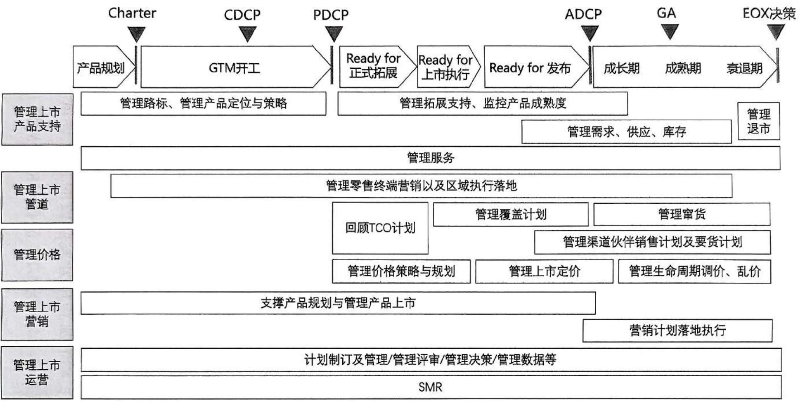
图 2-13 融合 MPP 流程 + GTM 操盘动作的 GTM 流程示意图
图 2-14 GTM 流程与 IPD 互锁示意图
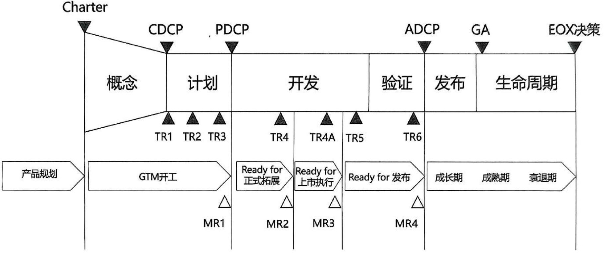
MR1 阶段
这是产品走向市场流程中的第一个重要评审阶段。在这个阶段，重点在于明确基于市场洞察所形成的初步营销需求。通常会涉及对市场趋势、客户需求、竞争对手动态等多方面的深入分析，从而提炼出产品需要具备的关键特性、功能以及市场定位等，为后续产品规划奠定基础。
示例：华为计划推出一款新的智能手机，在 MR1 阶段，市场团队通过调研发现消费者对手机续航能力、拍照画质以及 5G 网络适配性有较高期望，同时市场上竞品在这些方面也各有表现。基于这些信息，团队会形成初步的营销需求，要求产品研发团队在后续规划中重点考虑提升手机续航、优化拍照算法以及确保良好的 5G 网络体验等方面的内容。
MR2 阶段
MR2 阶段是在 MR1 基础上进一步深化和细化的评审阶段。此时，基于已经初步确定的营销需求，会进一步明确产品的详细规格、功能细节以及各项技术指标等内容，使其更加贴合市场实际需求和公司的产品策略。同时，还会开始涉及对产品成本的初步估算，并与各相关部门（如研发、采购等）就产品实现的可行性进行探讨。
示例：在 MR2 阶段，会根据 MR1 提出的提升续航要求，具体明确电池容量要达到多少毫安时、采用何种快充技术等；对于拍照画质提升，会详细规定摄像头的像素、传感器型号、影像处理芯片的性能指标等。并且会初步估算采用这些配置可能带来的成本增加，与研发和采购部门沟通是否能够在预算范围内实现这些功能和指标。
MR3 阶段
MR3 评审主要聚焦于产品的可交付状态。在这个阶段，产品已经经过了一定阶段的研发和测试，基本上具备了推向市场的条件。此时要对产品的实际性能、功能完整性、质量稳定性等方面进行全面评估，判断是否真正满足了之前所设定的营销需求。同时，还会对产品的包装、说明书等附属材料进行审核，确保整体产品的呈现符合市场预期。
示例：对于那款智能手机，在 MR3 阶段，会对手机的实际续航测试结果、拍照效果实测、5G 网络连接稳定性等实际性能指标进行评估，看是否达到了 MR2 阶段所设定的各项标准。并且会检查手机包装盒的设计、说明书的内容是否清晰准确且能有效传达产品信息，确保产品以一个完整且优质的状态准备推向市场。
MR4 阶段
MR4 阶段是产品正式推向市场前的最后一道评审关卡。在这个阶段，主要是对产品的市场推广方案、销售策略、售后服务准备等市场相关的配套措施进行全面审查。确保产品不仅自身质量性能达标，而且有完善的市场推广和销售服务体系来保障其在市场上的顺利推广和良好运营。
示例：在 MR4 阶段，会审查针对该手机制定的线上线下宣传推广方案是否合理有效，比如广告投放渠道是否精准、新品发布会的安排是否得当等；会审核销售策略，如定价策略是否合适、销售渠道是否畅通等；还会检查售后服务准备情况，比如维修网点是否覆盖到位、客服人员是否培训合格等。以确保产品能够顺利走向市场并取得良好的市场效果。
2.2.4 华为 GTM 应用案例
2013 年 6 月 18 日发布上市的 P6 和 2014 年 9 月 5 日发布的 Mate 7 是华为应用 GTM 流程操作较成功、较有代表性的手机。全生命周期内，P6 系列销售达到 400 多万台，而 Mate 7 系列则达到 700 多万台。
P6：第一款“找到感觉”的产品
2013年6月18日，华为在英国伦敦圆屋剧场举行了华为旗舰智能手机Ascend P6的全球发布会，以“美，是一种态度”为Slogan，让大众第一次感受到华为在做消费品方面有点儿找到感觉了。这是华为由运营商市场向公开市场转型、由低端机向高端机转型过程中第一款“找到感觉”的成功产品。从P6开始，华为从卖技术转向卖艺术，开始用美代替工业参数，主打美的体验，与消费者建立价值认同感和情感共鸣。
在 P6 发布会前，从 5 月初开始，网络上就不断有华为 P6 的产品和上市信息被曝光，包括工信部的审批资料、各种渠道流出的产品谍照等，引发了媒体和网友的广泛关注与讨论，其关注度甚至超越了当时炙手可热的竞品新品（发布前期的预热成功引发了期待）。
P6 有明确的产品定位与目标客户：定位中高端市场，对准中高端消费群体。目标客户主要定位为年轻的高收入时尚人群。这部分人群具有较强的消费能力，对新事物的接受度高，注重手机的外观设计、拍照功能以及品牌所带来的身份认同感。因此，华为在产品设计上紧贴目标群体的需求：P6 以 6.18mm 的极致纤薄机身成为当时全球最薄的智能手机，同时采用全金属机身，搭配金属拉丝和喷砂工艺，底部弧度过渡自然，美弧工艺设计是一大亮点，整机外观优雅而灵动。通过这样时尚的外观设计，加之出色的拍照功能以及优秀的屏幕显示等特点，P6 受到了消费者的关注和喜爱，同时也展示了华为在技术研发和产品设计方面的实力。
在定价策略上，P6在国内的价格相比国外价格低近1000元，这种差异化定价策略打破了人们的认知（通常认为手机产品国内零售价格要高于国外的零售价格），体现了华为对国内市场的重视，给消费者带来了实惠；同时也提升了产品的竞争力和市场份额。
渠道布局：全渠道布局，线上线下同时销售，加大覆盖范围。
营销传播: 2013 年, 华为提出了 “Make it Possible” (以行践言) 的全新品牌理念。华为 P6 的相关营销活动紧密围绕这一理念展开, 向消费者传递华为不断创新、追求卓越的品牌精神。同时, 余承东等华为终端高管纷纷开通实名微博, 通过微博与消费者进行互动和沟通，分享关于手机的意见与看法，增强了消费者对华为品牌的认同感和亲近感。
以 Mate 7 为例的 GTM 操盘
-
市场调研：前两代的 Mate 1 和 Mate 2 手机虽然不成功，但是却收获了喜欢大屏、长续航的第一批 Mate 粉丝。同时，华为通过实践及进一步的市场调研，发现高端用户对大屏幕、高性能和长续航的需求仍是主流。
-
市场细分：通过对种子人群的用户画像分析，发现这部分人群多数是职场精英，事业上小有成就，但事业家庭并重，压力大。手机作为生产工具被他们重度依赖，大屏幕、长续航非常符合这部分用户的需求。因此，将目标市场定位于高端商务用户，特别是对性能和续航有较高要求的用户。
-
客户需求管理：通过用户反馈和竞品分析，确定了大屏幕、高性能处理器、大容量电池和指纹识别等功能需求。
-
价值主张：爵士人生。
-
产品设计：采用航空级金属铝材全金属紧凑机身，业界83%超高的屏占比，2.9毫米的超窄边框设计配合6.8毫米的超薄机身厚度；双卡双4G、业界首款负向液晶超视网膜屏幕、超8核处理器、业界领先的按压指纹识别技术；支持全球最快网速的LTE Cat6、率先搭载EMUI3.0等。
-
产品定价：国内采用亲民价格策略，国内销售价格比国外价格低近千元，在市场中相对苹果和三星而言，竞争力相当强悍。
-
市场策略制定：通过对营销环境分析、消费者人群分析以及竞品分析，将华为 Mate 7 定位为高端商务手机，强调其高性能、长续航和安全性。
-
公关传播定位：比竞品更好的大屏手机；超 8 核 4G 旗舰大屏智能手机。
-
市场推广节奏和计划：预热期做足概念、发布期讲透产品、热销期演化价值主张。通过电视、网络、户外广告等多种方式进行广告宣传，举办新品发布会，邀请科技、数码及财经等媒体和意见领袖参与，提高产品的市场知名度。多维度捕捉目标人群，借鉴竞品的营销渠道，通过占领机场航站楼等高端场所，锁定高端人群并营造高端氛围。
-
市场反馈和持续改进：通过用户反馈和数据分析，不断改进产品设计和功能，确保产品的持续竞争力。
将 HUAWEI P6 和 Mate 7 的操盘与之前 HUAWEI P1 的操盘对比可知，在产品操盘的能力上，华为有了不止一个数量级的提升。这就是学习的力量、产品操盘的力量。
2.3 大零售业务流程架构 Retail v1.0
在 2.2.1 “向业界标杆学习引入 GTM 的背景”一节中提到, 集成产品开发 (IPD)、市场到线索 (MTL)、线索到付款 (LTC)、问题到解决 (ITR) 等流程, 通过相应的适配, 应用到 To C 业务场景中。适配了一年左右时间, 发现结果不是很理想。主要原因是 To B 业务和 To C 业务的销售运作模式在逻辑和业务流上有很大不同，尤其是销售流程的主路径存在差异: To C 模式下销售流程路径是 $\mathrm{SP} \& \mathrm{O} + \mathrm{MPR}$ ，而 To B 模式下销售流程路径是 LTC，如图 2-15 所示。
To C 业务模式是基于产品推动的，而传统的 To B 模式是客户拉动的；面向消费者业务的核心业务逻辑以规划运营过程为主，而面向企业客户业务则以交易过程为主。这种差异导致了 To C 业务的指导流程不能照搬已经成熟的 To B 业务流程。
战略决定业务，业务决定流程，流程决定组织，组织决定成败。公司战略已经为消费者BG指明了前进的方向。为了指导To C业务的开展和向公开市场转型，需要遵循消费品业务的发展规律，梳理渠道和零售业务，然后形成业务流程，最终形成组织能力以打胜仗。
2013 年，在项目组成员、业界专家及咨询公司顾问的共同努力下，输出了消费品业务场景下的渠道和零售业务框架，如图 2-16 所示。
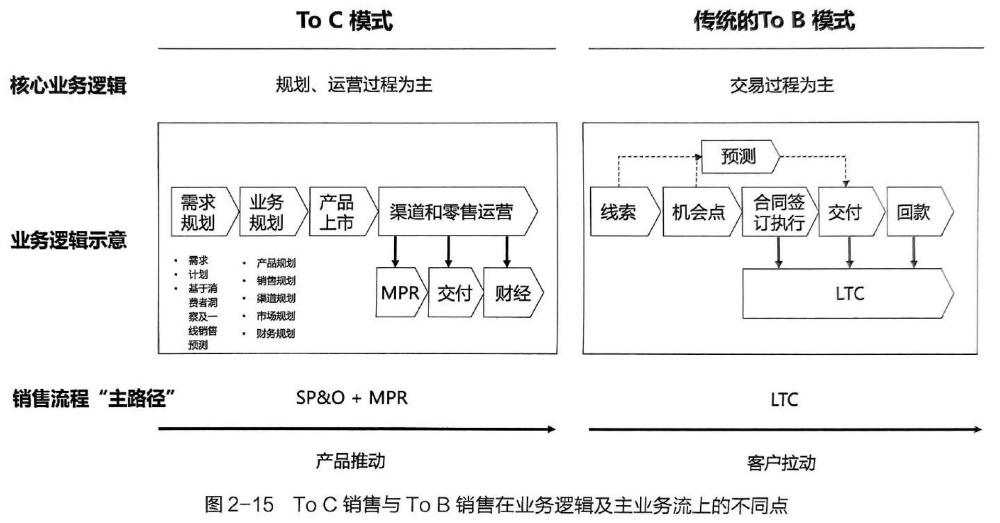
图 2-17 华为大零售业务架构 Retail v1.0
| Retail v1.0 | |||||||||||||||
|---|---|---|---|---|---|---|---|---|---|---|---|---|---|---|---|
| 规划与拓展渠道 | 管理渠道伙伴 | 管理销售运营 | |||||||||||||
| 零售普查 | 制定渠道模式和结构 | 管理渠道伙伴分群与分级 | 管理渠道策略 | 制订渠道拓展计划 | 实施渠道拓展计划 | 管理渠道伙伴选择和终止 | 管理渠道伙伴目标和绩效 | 管理渠道伙伴销售计划和订单计划 | 管理营销资源及活动 | 管理零售团队和门店 | 管理PSI | 管理数据和报告 | 管理销售计划 | 管理销售绩效 |
图2-16 ToC消费品业务场景渠道和零售业务框架
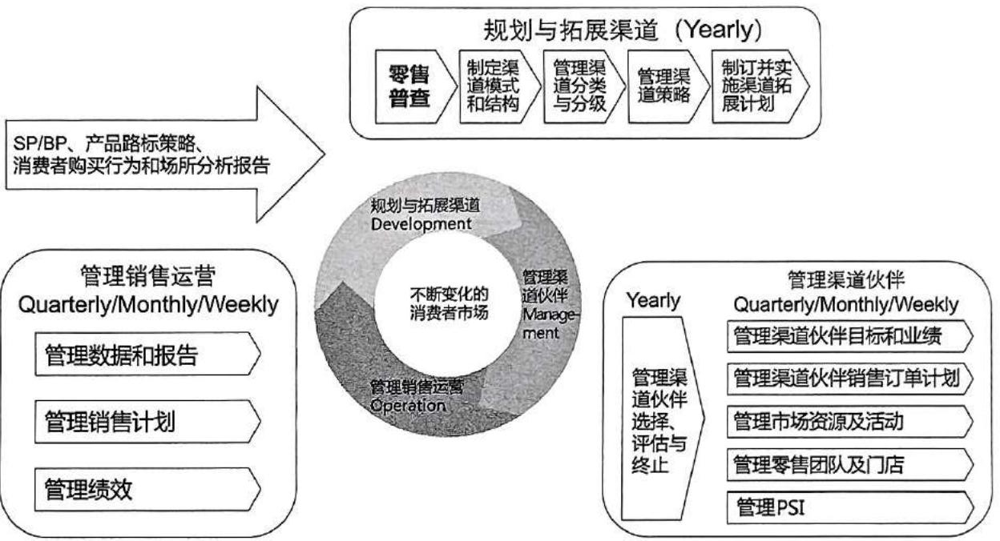
营销的核心在于激起消费者购买产品的欲望，而渠道与零售业务则侧重于将这种欲望转化为消费者的实际购买行为。二者相辅相成，共同推动产品走向消费者。渠道和零售主要以实现产品销售、变现为目的，那么，就要考虑解决“在哪里销售、谁去销售、如何保障销售顺利开展”的问题。针对这三个问题，自然而然得出的结论就是：渠道、客户、运营保障。
因此，图 2-17 所示内容可以用一句话概括：“承接公司 SP、BP 以及产品路标策略，通过对消费者购买行为和场景的分析研究，做好规划和拓展渠道，管理好渠道伙伴，管理好销售运营工作，做好产品的销售工作；同时，围绕不断变化的消费者市场，做好业务执行和复盘，不断推动业务能力的提升和进步。”
根据渠道和零售业务框架，形成华为大零售业务架构 Retail v1.0，用于指导相关部门按此流程开展渠道和零售业务。
1. 规划和拓展渠道
- 零售普查：在 MPP 流程中提到，流程的起点重要的一环就是市场洞察。华为 BLM 模型中战略制定也始于市场洞察。就如同打仗，先由侦察兵进行侦察，掌握战场全面信息后再制订作战计划，这样胜算才能大。同样，在进行渠道规划与拓展时，在开展渠道和零售管理之前，首先要进行零售普查，正所谓知己知彼，百战不殆。根据零售普查的结果，可以制作渠道地图、零售地图等，用于指导渠道和零售阵地建设、规划相应的资源投资。
零售普查的步骤为：明确普查项目、设计普查内容、执行普查、分析普查数据、确定后续跟进方案。
- 根据普查后的渠道和零售相关信息和数据，可以制定渠道模式和结构；代理商、分销商、零售商等客户需要按照分类分级的规则进行管理（制定渠道分类分级），针对不同的客户制定相应的政策（管理渠道策略），之后可以制订渠道拓展计划并实施（制订并实施渠道拓展计划）。
2. 管理渠道伙伴
- 这个模块涉及对渠道伙伴（代理商、分销商、零售商）的准入、评估和终止的管理。为什么称之为“渠道伙伴”而不是“渠道客户”呢？这是因为企业强调与客户建立一种长期的、互利共赢的合作关系，而不仅仅是简单的买卖关系。就像团队一样，是一个整体，共同致力于产品的推广和销售，双方资源共享，共同承担风险。这是华为“以客户为中心”价值观的体现。有付出就有回报，自2019年开始，虽然华为消费者BG的业务由于众所周知的原因经历了几年艰难的时刻，但是渠道和零售伙伴没有放弃华为，始终与华为站在一起；华为也给予渠道和零售伙伴必要的支持。就这样，华为的零售阵地仍然坚守在祖国的大地上，这也是2022年华为Mate 50（4G）手机上市后能够立刻重新打开市场局面的重要原因之一。华为通过管理目标、产品进销存管理（PSI ）、销售达成、资源投入以及终端零售门店等活动，实现与渠道伙伴的共赢。
3. 管理销售运营
-
通过管理好销售计划、相应的数据和报告以及绩效管理，及时反馈、及时修正，为渠道和零售业务保驾护航。
-
基于图 2-17 所示的架构，需要构建 “规划与拓展渠道” 的能力、“管理渠道伙伴”的能力以及 “管理销售运营” 的能力。因此，相应调整组织，新设、拆分部门，形成新的全球营销服组织体系 MSS ，如图 2-18 所示。
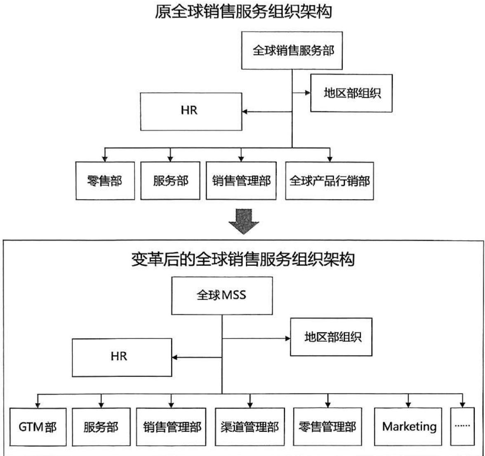
图2-18 华为全球营销服MSS组织架构
此时，形成以 GTM 流程 + 大零售业务流程架构 Retail v1.0 的 To C 产品营销操盘体系。
2.4 GTM 流程结合 Retail v1.0 形成 Retail v2.0
2.4.1 GTM 流程迭代升级的背景和方向
背景
根据 IDC 发布的数据，2011 年全球智能手机的总出货量为 4.914 亿台，较 2010 年的 3.047 亿台增长了 61.3%，增长极其迅速。2012 年达到 7.252 亿台，2013 年更是达到 10 亿台以上的需求量（见表 2-5）。在这种情况下，手机已经越来越呈现出快消品的特征，消费者对手机的选择，已经从单纯关注品牌回归到产品本身。以诺基亚为例，虽然它曾连续 15 年保持全球市场占有率第一的品牌，但由于产品硬件、软件落后，最终被市场和消费者抛弃。苹果、三星是业界的标杆，由于它们的产品力强大，并且在渠道、营销、零售、服务等方面遵循消费品的行业本质，不断努力构建和提升相关能力，因此很快跻身市场第一阵营。
资料来源：IDC、国盛证券研究所。
| 品牌 | 年份 | 品牌 | 年份 | ||||||||||||
|---|---|---|---|---|---|---|---|---|---|---|---|---|---|---|---|
| 品牌 | 2012 | 2013 | 2014 | 2015 | 2016 | 2017 | 品牌 | 2018 | |||||||
| 品牌 | 出货量/百万台 | 占比/% | 出货量/百万台 | 占比/% | 出货量/百万台 | 占比/% | 出货量/百万台 | 占比/% | 出货量/百万台 | 占比/% | 出货量/百万台 | 占比/% | 品牌 | 出货量/百万台 | 占比/% |
| 三星 | 219.7 | 30.3 | 313.9 | 31.3 | 318.2 | 24.4 | 324.8 | 22.7 | 311.4 | 21.1 | 317.3 | 21.6 | 三星 | 292.3 | 20.8 |
| 苹果 | 135.9 | 18.7 | 153.4 | 15.3 | 192.7 | 14.8 | 231.5 | 16.2 | 215.4 | 14.6 | 215.8 | 14.7 | 苹果 | 208.8 | 14.9 |
| 华为 | 29.1 | 4.0 | 48.8 | 4.9 | 73.8 | 5.7 | 106.6 | 7.4 | 139.3 | 9.5 | 153.1 | 10.4 | 华为 | 206 | 14.7 |
| LG | 26.3 | 3.6 | 47.7 | 4.8 | 59.4 | 4.6 | 74 | 5.2 | 99.8 | 6.8 | 111.8 | 7.6 | 小米 | 122.6 | 8.7 |
| 联想 | 23.7 | 3.3 | 45.5 | 4.5 | 57.7 | 4.4 | 70.8 | 4.9 | 53 | 3.6 | 92.4 | 6.3 | OPPO | 113.1 | 8.1 |
| 其他 | 290.5 | 40.1 | 394.9 | 39.3 | 599.9 | 46.1 | 625.2 | 43.6 | 654.5 | 44.4 | 577.7 | 39.4 | 其他 | 462 | 32.9 |
| 合计 | 725.2 | 100 | 1004.2 | 100 | 1301.7 | 100 | 1432.9 | 100 | 1473.4 | 100 | 1468.1 | 100 | 合计 | 1404.8 | 100 |
表 2-5 全球智能手机出货量及其占比
爆品操盘GTM
华为此时也面临着向公开市场转型后的一系列问题，这些问题在 P6、Mate 7 使用 GTM 流程操盘成功后也逐步显现出来：
-
消费者 BG 的产品开发流程 IPD 已相对完善, GTM 流程也已建立, 但在对接和运作中还不够紧密, 经常会出现脱节的情况。尤其在增加营销和零售等职能后, 需要有相应的流程与 IPD 流程相匹配。
-
虽然已建立产品路标等管理制度，但一线洞察收集、反馈等机制还不健全。
-
在 GTM 操盘中，营销和销售存在脱节，零售和销售也存在脱节现象，项目管理效率低下。
-
华为设有机关、地区部、代表处三级管理机构，但彼此拉通不畅，缺乏保障沟通和效率的机制。
-
各种信息来源复杂，信息同步困难，缺乏统一的语言体系。
-
新增的营销、渠道、零售等面向消费者的快消品业务模块较之前有显著独特性，例如消费品的产品定价（需考虑不同渠道的利润空间等，更为复杂）、调价等，要货预测计划也远比之前单纯的 To B 业务复杂。
-
项目拉通主要依靠个人关系、靠 “刷脸”，能力没有真正落实并沉淀在组织上，组织能力有待提升。
面对这些问题，华为决定逐一落实解决，于是展开消费者 To C 变革项目群建设，其中一个重点项目正是 “Retail 运作模式及架构建设”。在进行市场洞察、标杆调研以及自我评估后，华为明确了产品操盘流程的改进方向。
1. 遵循营销底层逻辑
结合业界标杆实践，发现公开市场的产品操盘依旧聚焦在 4Ps 原则下的四大要素：产品、价格、渠道和促销，相对应的则是产品规划、价格管理、营销传播和要货计划 / 交付管理（图 2-19）。即基于有效的市场和消费者洞察来规划产品，进行有效的价格管理，再通过精准营销触达消费者，从而激发购买意向。货品通过渠道布局保障及时供应并控制库存，实现消费者购买。要实现这样有效的产品操盘，需要各职能部门紧密协作、目标一致地完成。
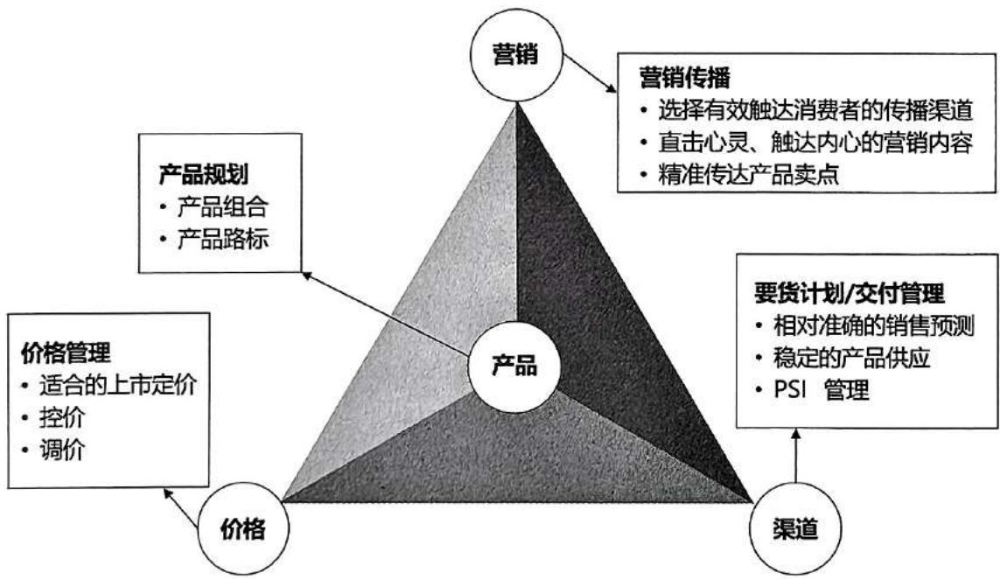
图2-19 以产品为核心的操盘4要素
以产品为龙头、为核心，制定产品规划（产品组合、产品路标）；通过适当的定价、控价、调价，持续保持产品的竞争力（价格管理）；热炒市场，选择有效触达消费者的传播渠道，利用直击心灵的营销内容将产品卖点“种草”于消费者，激发购买欲望（营销传播）；通过有效的渠道布局以及稳定的产品供应，实现消费者的就近购买（交付、要货、渠道管理）。
- 遵循消费品行业规律，建立 Retail 的主干业务流程，支撑产品上市操盘的营销、渠道、零售、服务等部门的运作与管理
通过与业界标杆对标，发现缺失产品营销服的流程，需要补足，如图 2-20 所示。
-
苹果的 ANPP 流程负责产品开发，Product MKT 与营销传播及销售负责市场销售；
-
三星的主干流下包含多领域流程，PLC 全社商品开发标准 Process、策略营销管理流程等；
-
华为有较成熟的 IPD 体系，以及 GTM 流程，但是缺少针对消费品公开市场的营销服务业务管理流程。
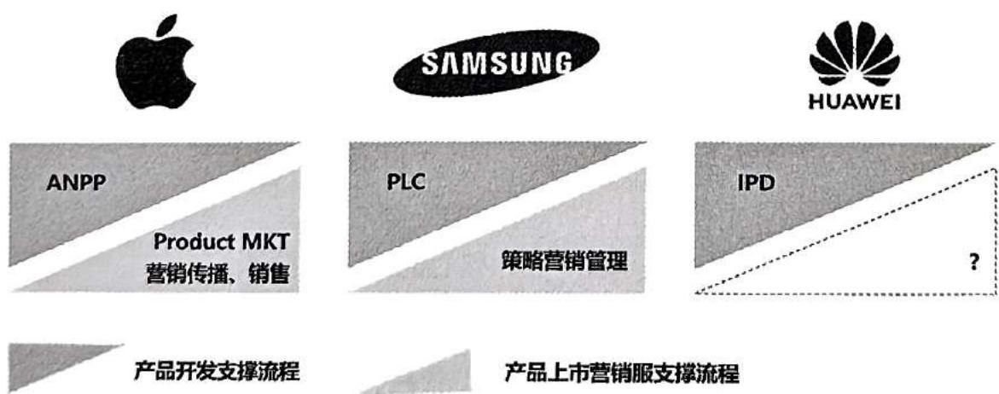
图 2-20 业务对标发现华为缺失营销服务业务管理流程
消费品经营的本质，通俗地解释，就是让消费者认可、购买并持续购买产品的过程。
-
消费者为什么选择？因为企业与消费者沟通效果良好，消费者认可产品能满足其需求，并激发了购买欲望。这涉及线上宣传、媒介以及品牌、口碑等活动。（消费者沟通）
-
消费者为什么购买？因为消费者可以深度参与，很方便地触达产品，并有良好的体验，从而将购买付诸行动。这涉及渠道布局、零售门店管理、产品体验等活动。（消费者参与）
-
消费者为什么持续购买？因为消费者获得产品满足，忠诚于该品牌。这涉及完美的日常产品体验、售后服务以及用户粉丝的经营，使品牌的净推荐值（NPS ）持续提升，进一步促进与消费者沟通，形成完美闭环、螺旋形上升态势。（消费者忠诚）
如图 2-21 所示，如果要经营好面向消费者的消费品业务，就一定要以消费者为中心，努力做好市场传播（线上宣传、媒介）、零售门店管理（终端形象与陈列、店员推荐、购机体验）、日常使用与体验（产品开发）、服务（售后服务）、品牌（品牌及口碑）等工作。因此，企业的产品能力、品牌能力、渠道能力、零售能力、服务能力等业务单元能力的提升，对消费者业务、对产品操盘的成功至关重要。
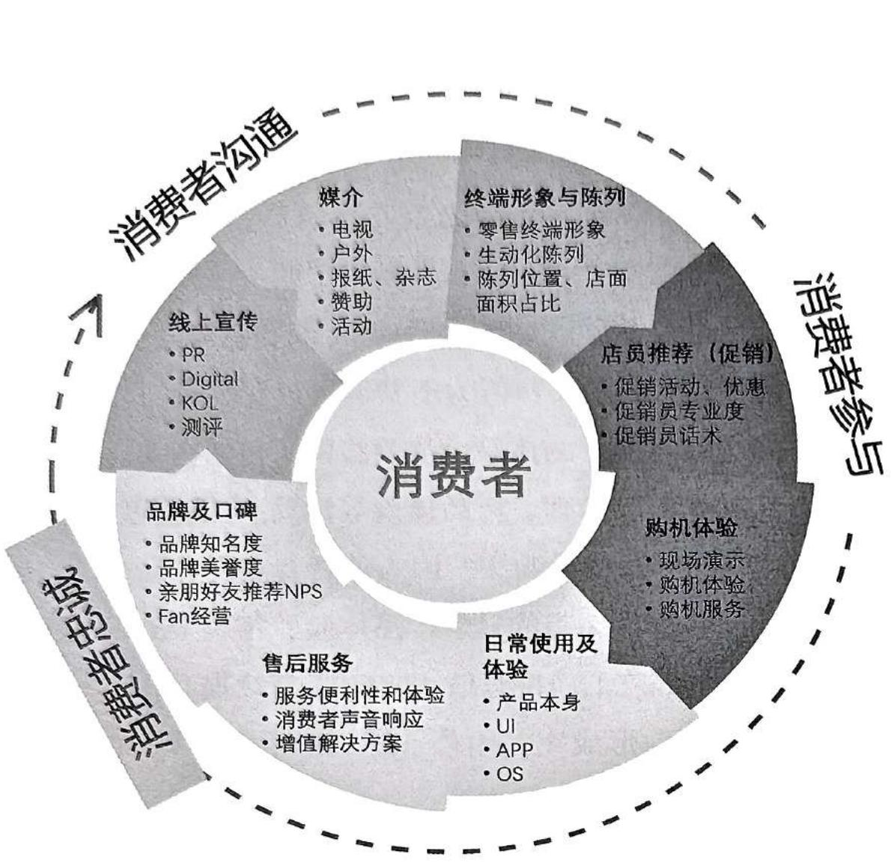
图2-21 消费品经营的本质示意图
3. 建立“产品 + 市场”双轮驱动的跨领域流程协同机制
产品前期以 IPD 流程支撑，产品上市后以营销服流程重点支撑，以 GTM 产品操盘的组织运作，将产品整体从创意规划、设计、开发直至生命周期结束全过程集成起来，有效协同，确保开发出消费者满意的产品（以消费者为中心的产品设计与开发），并在市场表现上获得商业成功（以消费者为中心的产品市场运作），如图 2-22 所示。
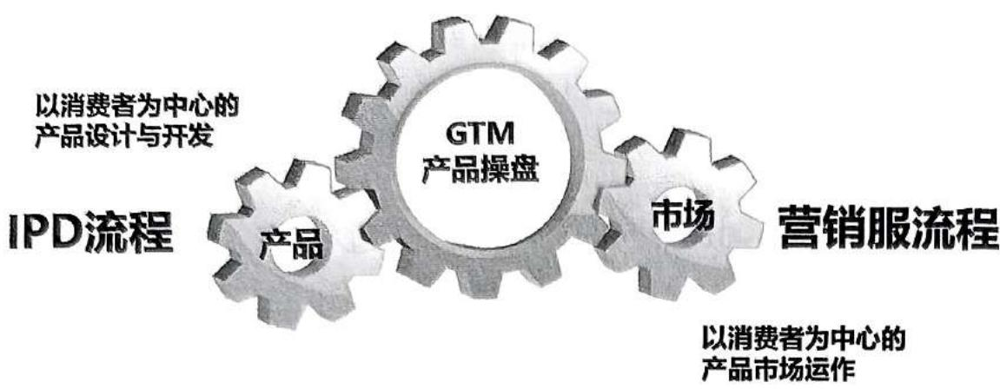
图2-22 IPD与营销服流程协同机制示意图
消费者 BG 的营销服流程是基于消费品行业的业务特性进行设计和开发的流程，将指导消费者 BG 市场端的业务开展，作为公司 L1 业务流程出现在公司的流程架构中。营销服流程是运作类流程（流程一般分为运作、使能、支撑三大类。运作类流程是客户价值创造流程，定义了所有为客户进行价值交付的业务活动；以“多打粮食”和提升作战能力为目标，通过与其他流程协同，提升整体竞争力），在公司流程架构中所处的位置如图 2-23 所示。
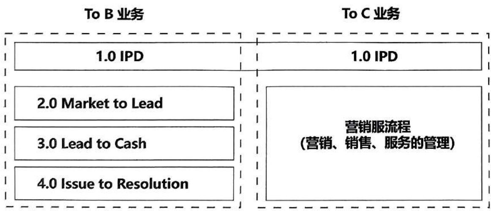
图2-23 营销服流程在公司流程架构中的位置示意图
- 统一操盘语言、统一操盘流程、统一操盘动作，拉通机关、地区部、代表处三层组织的产品操盘，实现上下拉通、左右对齐
前面提到，由于产品上市的操盘过程中会涉及多部门、跨领域的情况，彼此拉通不畅，缺乏沟通机制；而且各种信息同步困难，缺乏统一语言等诸多问题。当有了营销服流程后，就会将各部门、各领域在每个操盘阶段节点进行拉通、对齐，大家使用同一套语言沟通、同一个标准同步做一件事，达到了心往一处想、劲往一处使的目的。
2.4.2 IPMS：集成产品营销服流程
华为将 GTM 流程（图 2-13）结合 Retail v1.0（图 2-17）最终形成 Retail v2.0 主业务流程。Retail v2.0 可以看作是广义的 IPMS 流程，IPMS 操盘流程是 L2 级流程，如图 2-25 所示。2015 年下半年，经过 IPMS 项目组综合业界实践和华为实际运作情况进行提议，并由消费者 BG EMT 讨论确定后，通过了集团汇报，在 EAC 、C3T 和 ESC 均已认可并达成共识。
2.4.2.1 IPMS 是业务流
IPMS 是围绕一款单品，从确定路标到生命周期结束，端到端集成营销服体系运作的业务流（图 2-24）。横轴代表时间轴，是单款产品从 Charter 开始至生命周期结束的端到端全过程。纵轴表示跨领域各单元的业务协同。IPMS 流程的设计采用了泳道和泳池的概念，各个部门都在各自的泳道中前进，通过控制点（GR 点）确保各部门的进度一致，相互匹配。通过图 2-24，可以一目了然地看到在各个阶段各业务领域所需要完成的核心工作，“什么人在什么时候按照什么标准做什么动作”，从而保障业务协同和组织协同。通过跨领域业务的协同和互锁，实现了以下协同：
-
产销协同——通过销售预测、要货预测，提前规划产能，实现产销协同，减少因供应短缺或供大于求产生的库存问题。
-
营销协同——营销是让消费者产生购买欲望的过程，协同得好，购买需求全部得到满足；如果协同不好，消费者想买的时候买不到产品，就会影响销量。协同的目标是保证声量和销量的最大转化效率。
-
零售协同——促进人、货、场的协同，使数以万计的零售门店”一夜换装”成为现实。发布会后第二天可以立即开展首销，线下线上门店已有产品展示、备货；销售人员（含促销员）已经过培训考核且胜任该产品的销售工作；线下门店的形象、促销物料等已就位，已做好热销的一切准备。
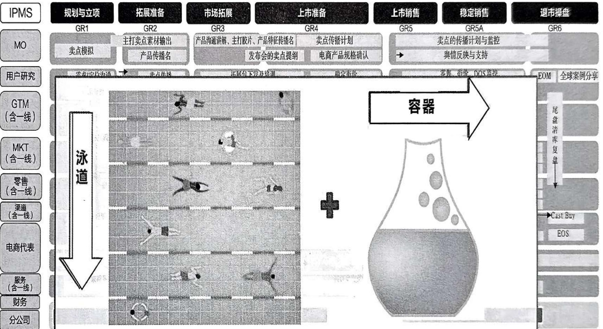
图 2-24 IPMS 是业务流
李农根
- 整体协同——有了协同的机制和流程，可以实现快速响应，跨领域部门的整体协同，力出一孔，从而利出一孔，让4P（产品、价格、渠道、促销）爆发更强大的力量。
2.4.2.2 IPMS 是业务流程
IPMS 是业务流程
IPMS 是 Retail 流程下的 L2 流程。它进行分场景业务流程定义，整合各类平台能力，同时可基于授权进行流程建设与运营。随着手机产品的“大众商品”属性越来越强，需要按照快消品的方式运作，强化 GTM 操盘能力、营销能力、渠道能力、零售能力、服务能力的建设，如图 2-25 所示。
16.0 Retail 流程是消费者 BG 的 L1 主流程，包含 6 个 L2 流程，分别是 16.1 IPMS、16.2 管理消费者产品 GTM、16.3 管理消费者营销、16.4 管理消费者渠道、16.5 管理消费者零售和 16.6 管理消费者服务。
流程层级
流程架构分为六层，如图 2-26 所示。流程架构中的 L1~L3 体现了业务方向和洞察力，是对业务模块和业务能力的高阶设计。以图 2-25 中的 16.0 Retail 流程为例，L2 流程涵盖了 To C 面向市场端的所有业务，包括 16.1~16.6 的 L2 流程。每个 L2 流程下有 L3 流程，如 L2 层级 “16.4 管理消费者零售” 包含 “管理零售阵地、管理零售物料、管理零售团队、管理零售营销和管理零售运营” 等 5 个 L3 流程。
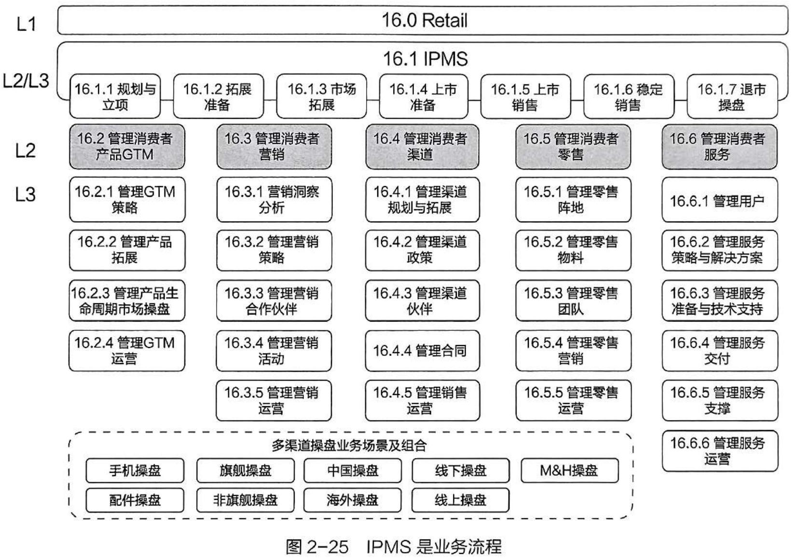
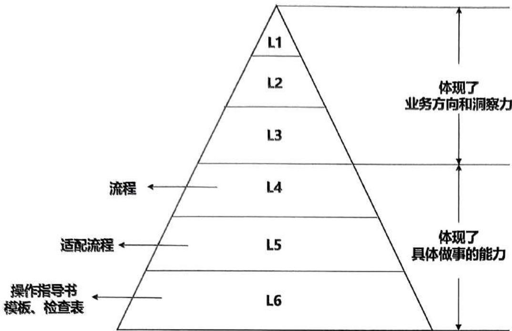
图2-26 流程架构分层示意图
流程架构中的 L4~L6 体现了具体做事的能力。其中 L4 是通常意义上的流程，有角色、活动、输入输出，按照逻辑顺序展开，用于指导具体业务运作。L5 是面向各业务单元和区域的适配流程，可以根据各自的实际业务场景和管理需要进行流程裁减和适配，以提高流程适用性。L6 是流程中的操作指导书、模板、检查表等，用于指导如何做事。这些工具、模板是对以往成功经验的固化，可显著提升工作效率和质量。
在华为，之所以这么强调流程管理，是因为流程实现了对业务成功实践经验的固化，减少了对个人的依赖，让业务从偶然成功走向持续成功。任正非强调：“模板化是所有员工快速进步的法宝。规范化就是我们把所有的标准工作做成模板，按模板执行。新员工入职，能看懂模板，会按模板执行，就算是国际化、职业化了。以现在员工的受教育程度，入职3个月就能掌握模板运用了。而这个模板是前人经过几十年才摸索出来的，你不必再去摸索。各流程管理部门、合理化管理部门，要善于引导各类已经优化的、已经证实行之有效的工作模板化。清晰流程，重复运行的流程，工作一定要模板化。一个有传承和积累的公司才是有价值的。”
2.4.2.3 IPMS 运作机制
IPD 流程定义了 IPMT 和 SPDT /PDT 团队组织架构，IPMS 同样定义了 IPMS-MT 、PCT 团队职责、例行运作及问题升级决策机制，通过 GR 来衔接 IPD 运作（这也是华为 IPD 变革成功后带来的好处，即企业有了能够快速复制一套流程及管理体系用于新的产品或行业的能力，这种思想和复制的能力是企业宝贵的财富），如图 2-27 所示。
第2章 解密：产品操盘流程PMS的前世今生
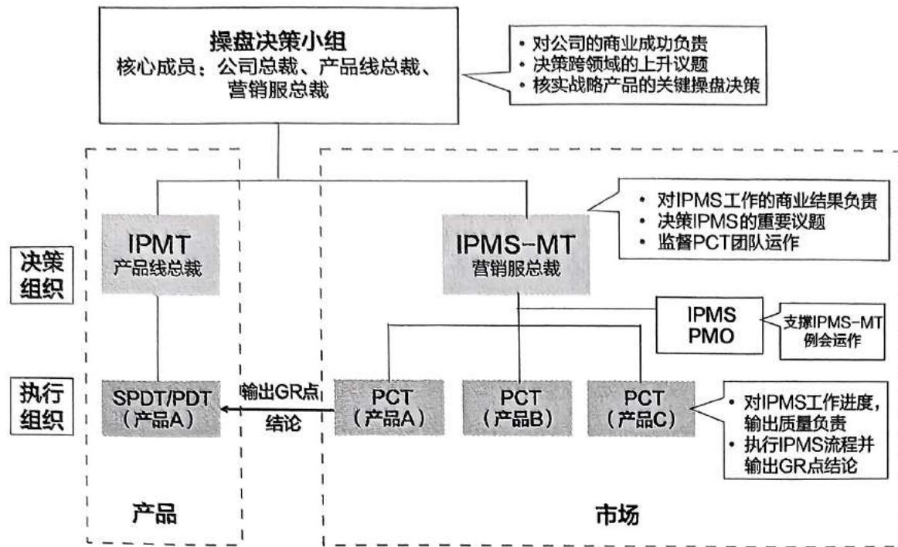
图2-27 IPMS运作机制并衔接IPD运作示意图
IPMS-MT 重量级团队职责
负责全球及某一特定区域的产品市场投资决策，对产品市场成功负责。
-
审核市场侧（含营、销、服，下同）中长期发展规划，年度业务计划和预算。
-
确立相应市场的愿景、使命和目标、战略方向以及投资优先级。
-
针对特定的细分市场，对下级 IPMS-MT 提出新建、授权及撤销建议，并提交操盘决策小组审议与决策，进行年度例行审视。
-
基于产品的市场策略确定授权规则，并匹配相应的IPMS-MT，由其批准成立PCT，并指派合适的PCT Leader。
-
审核批准产品营销计划，并确保该计划得到 GTM、营销、渠道、零售、服务及运作方面的支持，以确保计划的成功；实施管理新产品的引入，老产品的退出与过渡；管理市场预算与资源计划，以支持产品投资组合。
-
负责 IPMS 流程及管理体系在所辖市场领域的推行，并对 IPMS 等流程的优化提供支持。
-
对 IPMS 重大变更进行决策（拓展策略变更、进度变更、街价变更、范围变更等），对跨 PCT 领域协作中出现异议的上升议题进行决策。
PCT 重量级团队职责
PCT 团队是 IPMS 流程下跨部门的市场操盘团队，保证产品在市场上取得商业成功（规模和利润）；对单一产品在市场操盘整个过程中的端到端管理负责，对价、量、利润负责，包括产品操盘的进度、收入、客户满意度和按时保量完成销售。
-
管理和执行产品操盘过程中各种不同的业务和市场要素，并及时作出决策，保证各领域活动和各阶段交付件按时按质完成。
-
评审产品上市过程中的关键评审点（如产品各阶段 GR 点）。
-
拉通产品上市过程中及上市后的 GTM、营销、渠道、零售、服务等各领域进度及各领域的信息共享。
-
对产品生命周期内量价的波动进行监控并执行 IPMS-MT 的决策，保证产品的最大收益。
-
对 PCT 各领域的重大变更进行评估（拓展策略变更、进
度变更、街价变更、范围变更等), 提交 IPMS-MT 审核决策。
-
例行监控舆情及消费者声音，拉通 GTM、营销、渠道、零售、服务等各领域，及时上报消费者重大问题 / 危机公关方案供 IPMS-MT 评审和决策。
-
输出 GR 的结论作为市场领域的操盘建议给 PDT，由 PDT 提交 IPMT，支撑投资决策。
-
对项目进展、遇到的问题及争议，及时上报求助。
-
负责产品可销售性需求并组织验收（含哑机、演示样机、卖点演示 APK 等）。
为了保证单一产品的 PDT 团队和 PCT 团队业务的衔接, 进行如下设计: PDT 团队的产品经理同时也是 PCT 团队中的产品代表; PCT 团队的市场经理（一般由 GTM 经理担任）同时也是 PDT 团队成员, 担任市场代表的角色。通过这样的衔接, 可以有效地进行信息传递和拉通对齐, 如图 2-28 所示。
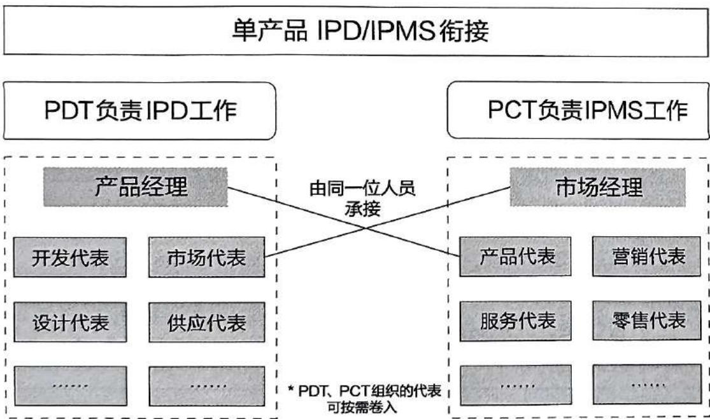
图2-28 PCT/PDT团队衔接业务互锁示意图
公司机关、地区部、代表处三层组织运作机制
- 总部（机关）PCT（见表2-6）
表 2-6 总部（机关）PCT 成员及职责说明
| 角色 | 成员 | 说明 |
|---|---|---|
| 主任 | GTM部门负责人 | 是PCT Leader,对PCT团队的组建、运行及关键Milestone(里程碑)的交付件质量进行总体把关 |
| 委员 | 总部GTM代表、总部市场代表、总部渠道代表、总部零售代表、总部财经代表、总部计划代表、总部服务代表等 | 总部层面PCT团队负责总体上市方案的策划和呈报决策,定期召开会议 |
| 会议召集人 | 总部GTM代表 | 需24小时内输出会议记录 |
- 区域（地区部）PCT（见表2-7）
表 2-7 区域（地区部）PCT 成员及职责说明
| 角色 | 成员 | 说明 |
|---|---|---|
| 主任 | 区域 GTM 负责人或区域 GM | — |
| 委员 | 区域 GTM 代表、区域 Marketing 代表、区域渠道代表、区域零售代表、区域财经代表、区域计划代表等 | 区域层面 PCT 团队负责区域上市方案的策划和呈报决策,定期召开会议 |
| 会议召集人 | 区域 GTM 代表 | 需 24 小时内输出会议记录 |
3. 国家（代表处）PCT（见表2-8）
表 2-8 国家（代表处）PCT 成员及职责说明
| 角色 | 成员 | 说明 |
|---|---|---|
| 主任 | 国家经理 | — |
| 委员 | 国家 GTM 代表、国家 Marketing 代表、国家渠道代表、国家零售代表、国家财经代表、国家计划代表等 | 国家层面 PCT 团队负责国家上市方案的策划和呈报决策,定期召开会议 |
| 会议召集人 | 国家 GTM 代表 | 需 24 小时内输出会议记录 |
重量级团队运作难点及解决方案
1. 责权利不明确
-
难点：业务决策、预算核算、绩效评价和奖金分配等职能仍由原有部门主导，重量级团队变成了议事机构或参谋机构，缺乏清晰的责权利界定。
-
解决方案：赋予重量级团队成员足够的权力，并制定激励政策，确保其承担商业成功责任，明确权责利。“重量级”的关键是团队负责人的权力要大于功能部门负责人的权力，要对组员具有主要的考评权力。
2. 运作规则不优化
-
难点：缺乏明确的决策规则，决策过程依赖于过去惯性，导致决策效率和质量未见提升。
-
解决方案：引入预审、预沟通机制，确保决策会议聚焦利弊分析和策略取舍；根据业务特征确定投票规则，明确主任的权限。举例：在 2006 年 IPD Marketing 领域评审机制研讨会上，徐直军对决策提出了要求：“以前 IPMT 委员参加会议就是举手，而在会议之前、在过程中没有任何需要参与签字确认的东西，无法承担作为一个委员应尽的责任。现在 Marketing 委员在每个 MR 点都要签字，签字不过的不能投赞成票。作为 IPMT 的委员在 IPD 流程中不能只是举手，在举手之前是有活动、有很多工作要做的，要在关键的环节签字确认，承担责任。”
3. 沟通与协调困难
-
难点：由于团队成员来自不同背景，沟通中难免会出现误解和冲突。
-
解决方案：建立有效的沟通渠道和机制，确保信息传递的准确性和及时性。例如，通过定期的 PCT 例会和 GTM 操盘委员会来实现信息同步和快速决策。
通过以上措施，可以有效解决重量级团队在 IPMS 流程体系中的关键难点，提升团队的运作效率和商业成功概率。
如何开好一场高效的 GTM 会议
高效 GTM 会议是确保产品成功上市的关键环节。为了提高 GTM 会议的效率和效果，可以采用以下三个工具：预审机制、结构化思维和评审要素清单化。以下是这三个工具的详细内容。
- 预审机制：预审机制是指在正式的 GTM 会议之前，对即将讨论的内容进行预先审查和准备的过程。通过预审，可以提前发现和解决潜在问题，确保会议中的讨论更加集中和高效。
具体内容: (1) 材料准备: 如市场调研报告、产品文档、销售策略、市场推广计划、客户服务计划 (如售后服务政策、技术支持方案) 等; (2) 预审流程: 内部预审、跨部门预审、高层预审; (3) 反馈与改进: 收集反馈、修改完善。通过将上会的材料提前预审, 再根据反馈意见对材料进行补充修改和完善, 确保在正式会议上能够顺利推进。
- 结构化思维：结构化思维是一种系统化的思考方法，通过将复杂的问题分解成更小、更易于管理的部分，从而提高决策和沟通的效率。
具体内容: (1) 问题分解: 明确目标 (此次会议的目的和需要解决的关键问题)、分解问题 (将主要问题分解成若干个子问题, 每个子问题都有明确的目标和责任人); (2) 逻辑框架: 各个子问题之间互不重叠且涵盖所有方面, 构建一个清晰的逻辑框架, 从顶层的总体目标到下层的具体细节逐层展开; (3) 信息组织: 分类整理、优先级排序; (4) 沟通表达: 清晰表述、使用可视化工具 (图表、流程图等)。
- 评审要素清单化：评审要素清单化是指将 GTM 会议中需要评审的各个方面和要素列成清单，确保评审过程全面、系统且无遗漏。
具体内容:(1)评审要素清单;(2)评审流程;(3)后续跟进。
通过预审机制、结构化思维和评审要素清单化这三个工具，可以显著提高 GTM 会议的效率和效果。预审机制确保会议前的准备工作充分，结构化思维帮助理清思路和逻辑，评审要素清单化则确保评审过程全面且无遗漏。这些工具的结合使用有助于确保产品成功上市，并在市场上取得良好的表现。
2.4.2.4 几个需要澄清的概念
业务流指的是企业或组织内资源、信息、数据或价值的流动路径和方向，强调业务活动的整体框架和逻辑关系，通常不涉及具体步骤的执行细节。IPMS 是不同职能领域各业务活动的集成，如图 2-24 的泳道图所示。以电商平台的业务流为例：用户下单 → 支付 → 仓库拣货 → 物流配送 → 用户签收 → 售后反馈。
业务流程是为完成特定业务目标而设计的一系列有序步骤和规则，强调具体的操作方法和执行顺序。例如：订单审核流程：接收订单→检查库存→验证支付→生成运单→通知仓库。
业务流的视角是宏观的，强调整体链路，跨部门端到端的；而业务流程的视角是微观的，强调具体步骤。
IPMS 与 IPD 的关系
如图 2-29 所示，IPD 流程 “确保产品做得出、做得好”，IPMS 流程 “确保产品推广得好、销售得佳”，两大业务流程相互配合，共保产品商业成功。
图 2-29 IPD 与 IPMS 在产品操盘中的衔接关系
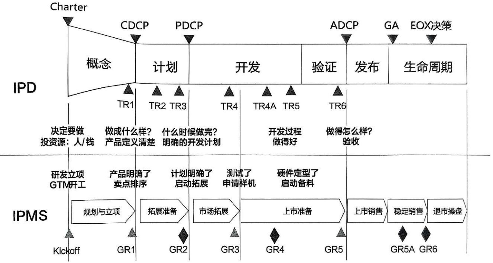
图2-29中的GR点取代了之前GTM流程中的MR评审点，作为市场领域的统一意见（GR点包含MR和SR评审点）。IPMS流程通过GR点衔接IPD流程，支撑产品IPMT在各DCP的决策。
- GR1：是对“规划与立项”阶段的评估点，通过市场洞察分析后的结论来验证产品档位需求和市场定位。
简单理解：产品明确了，卖点排序。
- GR2：是对“拓展准备”阶段的评估点，关注市场预判及销量承诺，并为下阶段的市场拓展准备素材（包括方案策划、素材包及预算等）。GR2 结论需经操盘委员会评审。
简单理解：销量承诺，项目计划明确，可以启动拓展。
- GR3：是对“市场拓展”阶段的评估点，根据拓展的结果确认街价或称建议零售价（RRP ）策略及评估要货预测。
简单理解：拓展包完成，营销计划初稿、定价、申请样机。
- GR4：是对“上市准备”计划阶段的评估点，在此点将定稿详细计划以及锁定资源。明确 GTM 操盘方案与预算方案、营销策略、渠道策略、零售策略以及首销、街价、分货等方案。GR4 结论需经操盘委员会评审。
简单理解：上市的策略及资源等该确定的都确定了。
- GR5：是对“上市准备”筹备阶段的评估点，重点关注上市准备度评估。
简单理解：上市前准备工作已万事俱备。
- GR5A：产品在“稳定销售”阶段需要首次调价的评估点。为了保持稳定的销售曲线，拟通过调价来应对竞争、库存等所带来的压力。GR5A 结论需经操盘委员会评审。
简单理解：需要调价了。如果需要多次调价，则设置GR5B、GR5C……
- GR6：是“退市操盘”阶段的评估点。重点关注产品退市操盘方案以及相应的准备工作。GR6结论需经操盘委员会评审。
简单理解：要退市了。
为了更好地理解 IPD 流程与 IPMS 流程对应关系，特绘制了四环模型图，如图 2-30 所示。
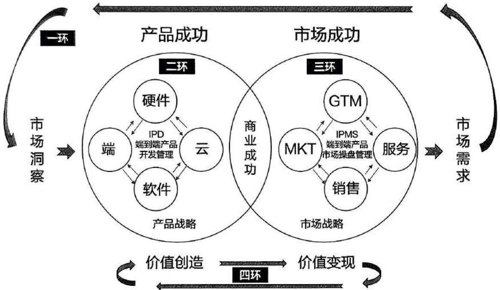
图2-30 IPD流程与IPMS流程对应关系四环模型图
一环：代表产品操盘是能力提升的循环过程。通过市场洞察，找准细分市场和目标人群；通过IPD流程运作开发出合适的产品；再经过 IPMS 流程运作实现产品的商业成功。产品在上市后的市场反馈形成新的市场需求，作为输入信息汇入下一代产品的市场洞察中。通过几代产品的循环积累，实现企业产品操盘能力的提升。
二环：价值创造的过程。IPD 端到端产品开发管理流程实现了产品的成功。通过硬件、软件、终端、云的协作，打造出合适且优质的产品。考核标准：IPD 不仅考核商业成功，还考核产品开发质量以及开发效率。
三环：价值变现的过程。IPMS 端到端产品市场操盘管理流程实现了产品在市场上的成功。通过 GTM、MKT、销售（渠道和零售）、服务的协作拉通，让产品卖得好。
四环：价值流。从创造出有价值的产品，再到价值变现，从而获得资源再投入新一轮的价值创造中，生生不息、不断地发展壮大，最终实现企业的商业成功。
IPMS 与 GTM 的关系
关于 GTM 和 IPMS，在前文都已经讲到，在这一节中再归总并加以明确，以便于读者理解。
GTM 是 “Go To Market” 的缩写，意为产品上市，即执行产品进入市场落地的过程。因此，在上文的描述中，GTM 有时代表流程或体系（GTM 流程、GTM 体系）；有时代表执行上市工作的部门或岗位（GTM 管理部、区域 GTM、产品 GTM、零售 GTM 等）；同时，GTM 也是一种产品导向的业务视野，即如何将一个成熟的产品通过合理的定位、定价、MKT策略、销售策略等方法，让产品出现在合适的场所，触达目标人群，并尽可能促成交易，实现产品经营效益和品牌效益的最大化。
IPMS 既是业务理念也是业务流程，是华为用于指导产品上市工作，确保产品推广得好、销售得好的工具。IPMS 流程需要集成众多跨领域部门进行通力协作，由跨领域各部门业务代表组成的 PCT 团队按照 IPMS 流程进行产品上市相关的业务运作。PCT 主任一般由 GTM 经理担任。在这里强调一点，企业并不是一定要成立 GTM 部门或 GTM 组织，而应根据公司规模、业务规模视情况而定。在一些公司里，没有设置 GTM 部门，而是由市场部承担 GTM 职能；而在某些企业，则由销售部门来承接 GTM 职能的工作。
IPMS 与零售的关系
我在另一本书——《华为零售》中将 IPMS 定义为 “宏零售”，这是更广义的零售概念。而一般所说的零售管理，指的是对零售店面、零售人员、零售促销、零售培训、零售运营等的管理，聚焦在零售门店层面。
菲利普·科特勒博士给零售的定义是：“将商品或服务直接销售给最终消费者，供其个人非商业性使用的过程中所涉及的一切活动。”零售，顾名思义，即“零着卖”，因此，这种方式决定了零售行业与其他行业相比具有一些独有特点：消费品和服务、最终消费者、一种活动。再精炼总结，就是“人、货、场”，这也是零售的三大要素，如图2-31所示。
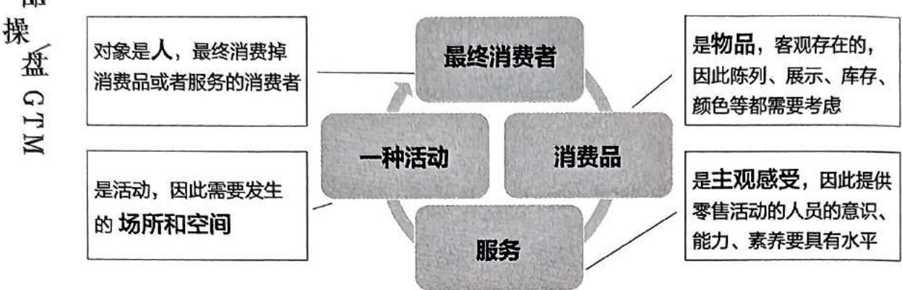
图2-31 零售涉及“人、货、场”三要素
IPMS 流程最终实现了什么？是营销 4Ps 理论（Product 产品、Price 价格、Place 渠道、Promotion 促销）的落地应用，是产品的商业成功（卖得出、卖得好）。这些内容仍然可以归结为“产品、销售给消费者、活动过程”，因此，IPMS 是更广泛意义上的零售，取名为“宏零售”。宏，本义指房屋幽深而有回响，后引申出广大、广博、高远、发扬等含义。宏零售是集营销、渠道、零售、服务之大成者，共同以消费者为中心，在满足消费者需求和企业商业成功上实现双赢。
IPMS 的名字来历
看到许多文章提到 IPMS 是从 IPD 衍生过来的，IPD 叫集成产品开发，因此将集成产品营销服称为 IPMS。这样的解释也勉强可以，但是深究的话，这样的说法欠妥当。第二章讲述了华为产品操盘流程是 MPP 流程（是 IPD 的支撑流程）融入 GTM 理念发展至 GTM 流程，再结合 Retail v1.0 发展而成的，当时也习惯叫作整合营销服（面向市场端到端管理）。作者多方收集信息，也采访了当年的老同事，目前较可信的说法是这个名字是 “Retail 运作模式与架构项目” 项目组的成员集体智慧的结晶，最后由 MSS 总裁批准确定下来，称之为 “IPMS 集成产品营销服”。
2.4.3 华为 IPMS 流程操盘应用成功案例
首款应用 IPMS 流程的手机 P9 大获成功
使用 IPMS 流程操盘的第一款手机是 Huawei P9，同时 P9 也是华为手机突破历史纪录的一款手机——首款销量破千万台的手机。在这个成绩里面，除了向公开市场转型这几年间的经验积累外，更符合消费品操盘流程的 IPMS 的上线也是一大推力，为之作出了贡献。通过表 2-9 可以看到，尤其是 2016 年以后，华为手机每年的销量都突飞猛进，而且每年达成 1 亿台出货量的时间越来越短。从 2016 年 10 月 14 日实现当年出货 1 亿台，发展至 2019 年，仅仅用 5 个月的时间就达到了 1 亿台手机的出货量。2018 年的 P20 破千万台销量的时间是 147 天，2019 年的 P30 更是将这个时间提前了 62 天，仅用 85 天销量就破千万台。由此可见，IPMS 的产品操盘力是多么强大！
表 2-9 2010—2019 年华为手机销售数据表
| 年份 | 销量/万台 | 增加数量/万台 | 销量达到1亿台日期 | 单型号销量达到千万台时间 | 上市操盘流程 |
|---|---|---|---|---|---|
| 2010 | 300 | — | — | — | MPP流程 |
| 2011 | 2000 | 1700 | — | — | ...... |
| 2012 | 3200 | 1200 | — | — | ...... |
| 2013 | 5200 | 2000 | — | — | GTM流程 |
| 2014 | 7500 | 2300 | — | — | ...... |
| 2015 | 10800 | 3300 | 12月22日 | — | ...... |
| 2016 | 13900 | 3100 | 10月14日 | P9首款破千万台 | IPMS流程 |
| 2017 | 15300 | 1400 | 9月12日 | — | ...... |
| 2018 | 20800 | 5500 | 7月18日 | P20 147天破千万台 | ...... |
| 2019 | 24000 | 3200 | 5月30日 | P30 85天破千万台 | ...... |
华为 Mate 系列的旗舰机型不断迭代，通过 IPMS 的精细化操盘大获成功，并带动了华为整体品牌升级。部分型号的销售量与销售额详见表 2-10。
表 2-10 2010—2019 年华为 Mate 系列手机部分型号的销售表
| 型号 | 2011年Mate 1 | 2012年Mate 2 | 2014年Mate 7 | 2015年Mate 8 | 2016年Mate 9 Pro | 2017年Mate 10 Pro | 2018年Mate 20 Pro | 2019年Mate 30 Pro |
|---|---|---|---|---|---|---|---|---|
| 价格/元 | 2688 | 2888 | 2999 | 3699 | 4699 | 5399 | 6199 | 6899 |
| 销量/万台 | 40 | 30 | 400 | 600 | 700 | 800 | 1000 | 1200 |
| BG总销售/亿美元 | 68 | 74 | 90 | 200 | 280 | 441 | 498 | 668 |
IPMS 助力华为 2024 年 Q4 重返中国市场 No.1
权威市场调研机构的数据显示（见表2-11），2024年第四季度（Q4），中国手机市场新机激活量排名中，华为、小米、苹果分别位居第一、第二、第三。其中，华为新机激活量为1308.78万台，市场份额为 $18.04\%$ ，较去年同期增长2.74；苹果手机新机激活量为1241.17万台，市场份额为 $17.11\%$ ，较去年同期大幅下滑，下降 $2.92\%$ 。
表 2-11 2024 年第四季度中国手机市场排名
| 排名 | 品牌 | 2024年Q4 | 2023年Q4 | ||
|---|---|---|---|---|---|
| 排名 | 品牌 | 激活量/万台 | 市场份额/% | 同比增长 | 激活量/万台 |
| No.1 | 华为 | 1308.78 | 18.04% | 2.74 | 1146.57 |
| No.2 | 小米(含REDMI) | 1243.22 | 17.14% | 1.39 | 1180.22 |
| No.3 | 苹果 | 1241.17 | 17.11% | -2.92 | 1501.16 |
| No.4 | Vivo(含iQOO) | 1145.66 | 15.79% | 2.09 | 1026.42 |
| No.5 | 荣耀 | 962.28 | 13.26% | -1.56 | 1111.16 |
| Others | 其他 | 1354.12 | 18.66% | -1.73 | 1528.558 |